Дерматиты, токсикодермия и экзема. Атопический дерматит. Ихтиоз, врождённый буллёзный эпидермолиз.
Дерматиты: понятие, классификация этиологических факторов
Кожа — первый барьер между организмом и внешней средой, и воспаление на этом барьере возникает гораздо чаще, чем кажется. Дерматит — это острое воспаление кожи, развивающееся в ответ на прямое экзогенное воздействие: механическое, физическое, химическое или биологическое. Заметьте принципиальное ограничение: речь идёт о внешнем пусковом факторе, а не о системном нарушении обмена или внутреннем иммунном сбое — этим дерматит принципиально отличается от экземы, о которой пойдёт речь позже.
Кажется, что дерматит возникает у любого человека, если только воздействие достаточно сильное, — и что тело само разберётся, опасен ли раздражитель. На деле всё иначе. Одни раздражители вызывают воспаление у всех без исключения — стоит лишь создать нужную концентрацию или температуру. Другие безвредны для большинства людей, но у тех, чья иммунная система успела «запомнить» вещество, запускают полноценную воспалительную реакцию даже в ничтожных количествах. По этому принципу все этиологические факторы делятся на две большие группы: облигатные раздражители и факультативные раздражители.
Облигатные раздражители — это агенты, которые повреждают кожу у каждого человека при достаточной интенсивности воздействия. Среди них выделяют механические (давление, трение), физические (высокая и низкая температура, электрический ток, солнечная инсоляция, рентгеновское и радиоактивное излучение) и химические (кислоты, щёлочи, соли некоторых металлов и кислот, высокие концентрации дезинфицирующих средств). Здесь не нужна никакая предрасположенность: концентрированная серная кислота разрушит кожу рабочего и академика одинаково.
Факультативные раздражители действуют иначе. Сами по себе они безопасны — воспаление возникает лишь у сенсибилизированных лиц, то есть у тех, чья иммунная система прошла предварительную подготовку. Сенсибилизация — это процесс, при котором при первом контакте с веществом-аллергеном организм вырабатывает специфические антитела или формирует клон реактивных T-лимфоцитов; никакого внешнего воспаления при этом ещё нет. Но при повторном контакте уже подготовленная иммунная система узнаёт аллерген и отвечает бурной реакцией. Именно поэтому человек может годами работать с каким-либо химическим веществом без последствий — а потом у него внезапно развивается выраженный контактный дерматит. Механизм сенсибилизации — обязательное условие реализации факультативного фактора: без него аллерген останется просто веществом.
Посмотрите на снимок ниже.

На этом кадре — ладонная поверхность кисти с выраженным контактным дерматитом, возникшим от верёвки, которой тянули воду из колодца. Обратите внимание: поражение строго повторяет контур предмета — ладонные складки и пальцы там, где верёвка прилегала плотнее всего. Это типичный признак контактного дерматита от любого раздражителя: очаг асимметричен, границы чёткие, а форма повторяет поражающий агент.
Два вида раздражителей различаются по трём ключевым параметрам: кому они опасны, каков механизм повреждения и каковы типичные примеры. Взгляните на сравнение в таблице ниже — а затем разберём каждую строку.
| Параметр | Облигатные раздражители | Факультативные раздражители |
|---|---|---|
| Примеры | Кислоты, щёлочи, высокая температура, электрический ток, ионизирующее излучение, механическое трение | Никель, хром, латекс, косметические отдушки, растительные аллергены, некоторые лекарственные вещества при контакте с кожей |
| Механизм повреждения | Прямое физико-химическое разрушение тканей, не требующее участия иммунной системы | Иммунологическая реакция (чаще IV тип — замедленная гиперчувствительность) у сенсибилизированных лиц |
| Контингент поражённых | Все люди при достаточной интенсивности воздействия | Только лица с предшествующей сенсибилизацией к данному аллергену |
| Зависимость от предыдущего контакта | Нет: первый контакт при достаточной силе воздействия уже вызывает повреждение | Да: первый контакт — сенсибилизация без симптомов; воспаление — при повторном контакте |
Как видите в таблице, главное различие — не в природе вещества, а в том, кто оказывается жертвой. Облигатный раздражитель универсален: щёлочь разъедает кожу вне зависимости от анамнеза и аллергического статуса пациента. Факультативный раздражитель избирателен: солли хрома или латексные перчатки совершенно безобидны для человека без сенсибилизации — и становятся источником мучительного дерматита для того, чей организм уже прошёл иммунологическую «подготовку». Именно поэтому при сборе анамнеза у больного с дерматитом важно спросить не только о природе контакта, но и о том, был ли этот контакт прежде и каким был ответ кожи.
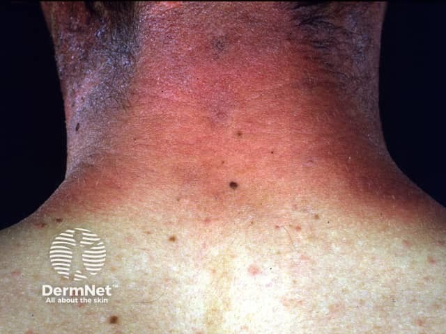
На этом снимке — задняя поверхность шеи и верхняя часть спины с фотоаллергическим контактным дерматитом от химического фотозащитного средства. Здесь перед нами факультативный раздражитель в действии: само вещество безвредно, но у сенсибилизированного человека ультрафиолет превращает его в антиген. Обратите внимание на то, как поражение повторяет открытые участки кожи — именно там, куда попадало солнце поверх крема. Форма очага снова диктуется не случайностью, а геометрией контакта.
Таким образом, понимание двух групп факторов — это не просто классификация ради классификации. Вывод, который определяет тактику врача: при облигатном раздражителе достаточно устранить контакт; при факультативном необходимо ещё и выявить аллерген, к которому сформировалась сенсибилизация, — иначе дерматит будет возвращаться снова и снова.
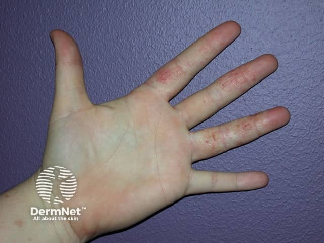
Простой контактный (артифициальный) дерматит
Кожа каждый день соприкасается с десятками веществ и воздействий. Большинство из них она переносит без последствий — но лишь до тех пор, пока раздражитель не превышает порога, выше которого ткань разрушается у любого человека без исключения. Именно такое поражение называют артифициальным дерматитом (от лат. artificialis — искусственный, рукотворный): острое воспаление кожи, возникающее под действием облигатных, то есть безусловных, раздражителей, которые при достаточной силе и времени воздействия вызывают повреждение у всех людей. Это принципиально отличает его от аллергического контактного дерматита, где нужна ещё и индивидуальная сенсибилизация.
Раздражители, способные вызвать артифициальный дерматит, делят на четыре группы. Механические — давление и трение: мозоли от инструмента, пролежни от гипса. Физические — солнечная инсоляция, высокая и низкая температура, электрический ток, рентгеновское и радиоактивное излучение; вода горячее 60 °C уже относится к облигатным раздражителям. Химические — концентрированные кислоты и щёлочи, соли некоторых металлов и кислот, высокие концентрации дезинфицирующих средств. Наконец, биологические факторы — сок некоторых растений, выделения гусениц и других членистоногих. Общее у всех четырёх групп одно: достаточная доза повреждает кожу вне зависимости от иммунного статуса пациента.
Клиническая картина напрямую зависит от дозы и агрессивности раздражителя. Принято выделять три формы, и разобраться в них удобно, если сразу посмотреть на Таблицу 1 — там три строки, каждая из которых соответствует нарастающей тяжести. Но таблица — лишь каркас, поэтому разберём каждую форму словами.
| Форма | Морфология | Степень тяжести | Тактика |
|---|---|---|---|
| Эритематозная | Гиперемия, отёк, жжение и болезненность без нарушения целостности кожи | Лёгкая | Устранение раздражителя, охлаждающие примочки с антисептиками, цинковая паста, пантенол |
| Везикуло-буллёзная | На фоне эритемы — пузырьки и пузыри с серозным или серозно-геморрагическим содержимым | Средняя | Устранение раздражителя, вскрытие пузырей с соблюдением асептики, антисептические повязки, стероидные кремы; при инфицировании — антибиотики |
| Некротически-язвенная | Некроз дермы и подлежащих тканей, язвы, рубцевание | Тяжёлая | Госпитализация, системная терапия, хирургическая обработка, восстановление кожного покрова; возможна пластика дефектов |
Самая лёгкая — эритематозная форма: кожа краснеет, отекает, пациент ощущает жжение и боль, но целостность покрова не нарушена. Именно такой реакцией отвечает кожа на умеренный химический или тепловой раздражитель — например, на непродолжительный контакт со щелочным моющим средством. При устранении причины эритема быстро проходит.
Если раздражитель агрессивнее или действовал дольше, развивается везикуло-буллёзная форма: на отёчном гиперемированном фоне появляются пузырьки и крупные пузыри — буллы — с серозным или серозно-геморрагическим содержимым. Такую картину, например, даёт ожог паром или кислотой средней концентрации. Пузыри вскрывают с соблюдением асептики, накладывают антисептические повязки; при присоединении вторичной бактериальной инфекции назначают антибиотики.
Наконец, при воздействии концентрированных кислот или щелочей, а также при длительном контакте с агрессивной средой развивается некротически-язвенная форма — самая тяжёлая: гибнет не только эпидермис, но и дерма, а порой и подлежащие ткани. После отторжения некроза остаётся язва, заживающая с образованием рубца. Такие пациенты нуждаются в госпитализации; в тяжёлых случаях единственным эффективным средством становится пластика кожных дефектов.
Посмотрите на фотографию тыльной поверхности кисти ниже — перед вами типичный раздражительный контактный дерматит. Обратите внимание на чёткую границу эритемы: она резко обрывается там, где кожа перестала соприкасаться с раздражителем. Именно эта граница — один из ключевых диагностических ориентиров.
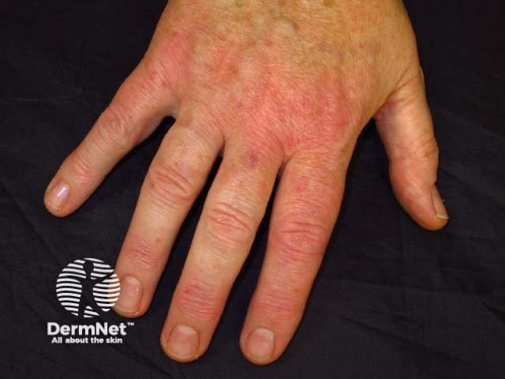
Теперь посмотрите на второй снимок — предплечье с множественными мелкими элементами на фоне разлитой эритемы. Здесь видна везикуло-буллёзная стадия: пузырьки ещё небольшие, но эритема уже отчётливая, а граница поражения соответствует зоне химического контакта.
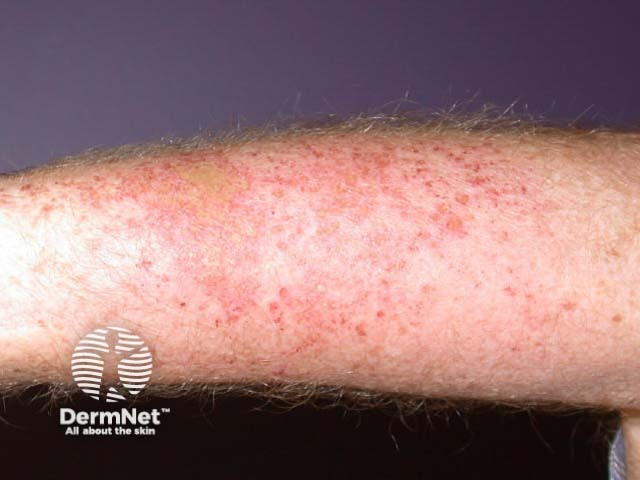
Диагностика артифициального дерматита строится на нескольких надёжных признаках. Во-первых, острое воспаление возникает именно на месте воздействия экзогенного раздражителя — механического, физического, химического или биологического. Во-вторых, поражение асимметрично и точно повторяет контур контакта: форму перчатки, поверхность, которой касалась едкая жидкость, контур повязки. В-третьих, границы очага чёткие — в отличие от аллергического контактного дерматита, где реакция нередко выходит за пределы зоны контакта и имеет нечёткие края. В-четвёртых, после устранения раздражителя воспаление быстро разрешается. Все четыре признака вместе делают диагноз очевидным даже без дополнительных исследований.
Болезненность — ещё один отличительный признак, на который стоит обратить внимание. При аллергическом дерматите пациент жалуется прежде всего на зуд; при артифициальном — на боль и жжение. Это следствие прямого химического или термического повреждения нервных окончаний, а не опосредованного действия медиаторов воспаления.
Главный принцип лечения — немедленное устранение раздражителя. Не будь у кожи способности быстро восстанавливаться после прекращения воздействия, пришлось бы бороться с непрерывно прогрессирующим некрозом вместо ограниченного очага. Местная терапия назначается с учётом формы: при эритематозной достаточно охлаждающих примочек с антисептиками, цинковой пасты и пантенола для восстановления покрова; при везикуло-буллёзной добавляют стероидные мази и кремы, а при инфицировании — антибиотики; при некротически-язвенной пациент нуждается в стационаре и системном лечении. При обширном поражении и нарушении общего состояния госпитализация обязательна.
Профилактика укладывается в три простых правила: соблюдать технику безопасности при работе с потенциальными раздражителями в быту и на производстве; пользоваться средствами индивидуальной защиты — перчатками, респираторами, защитными очками и барьерными кремами; соблюдать правила личной гигиены. Применительно к производственным факторам это означает, что технические регламенты охраны труда — не формальность, а прямое дерматологическое предписание.
Аллергический контактный дерматит
Простой контактный дерматит возникает у любого человека — достаточно подержать руку в кислоте. Аллергический контактный дерматит устроен иначе: кожа воспаляется не от силы воздействия, а от того, что иммунная система уже «запомнила» это вещество и теперь реагирует на него даже в ничтожной концентрации. Именно поэтому первый контакт с аллергеном проходит незаметно, а воспаление вспыхивает только при повторном.
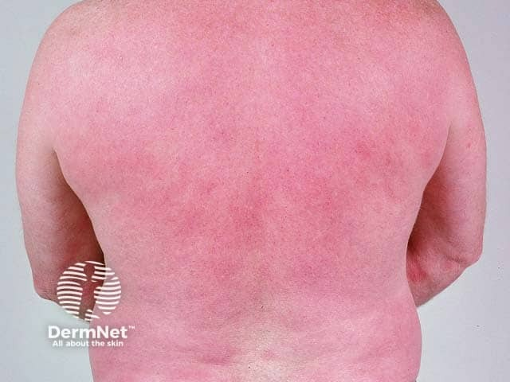
В основе этого лежит гиперчувствительность замедленного типа — то есть попросту реакция иммунной системы, которая разворачивается не за минуты, как при крапивнице, а спустя 24–72 часа после контакта с веществом. Реакцию относят к IV типу по классификации Джелла и Кумбса: антитела в ней не участвуют — всё решают Т-лимфоциты.
Цепочка патогенеза начинается с того, что аллерген сам по себе слишком мал, чтобы иммунная система его заметила. Такое неполноценное вещество называют гаптеном — то есть попросту полуантигеном, который становится опасен лишь после того, как соединится с белком кожи и превратится в полноценный антиген. Этот комплекс захватывают клетки Лангерганса — резидентные макрофаги эпидермиса — и представляют его Т-лимфоцитам. Сенсибилизация состоялась. При следующем контакте с тем же гаптеном уже готовые Т-лимфоциты выбрасывают лимфокины, которые и запускают воспаление.
Среди аллергенов-гаптенов — вещества самой разной природы. Неорганические: соли хрома, никеля, кобальта, йод, бром, серебро, золото, платина. Органические: красители, формальдегид, смолы, каучук, скипидар. Лекарственные: пенициллин, стрептомицин, новокаин, салицилаты, димедрол. Объединяет их одно свойство — моновалентная сенсибилизация: иммунная память формируется строго к одному конкретному веществу, а не к химическому классу в целом. Практически это значит, что пациент, сенсибилизированный к соли никеля, вовсе не обязательно среагирует на хром — хотя оба металла.
Посмотрите на снимок ниже: слева колено закрыто чёрным эластичным наколенником, справа — та же нога без него.
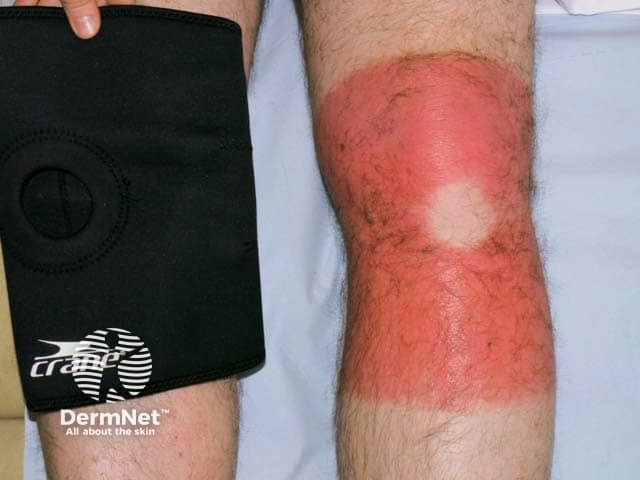
Видите, как чётко воспалённый участок очерчен формой наколенника? Это и есть аллергический контактный дерматит на ускоритель вулканизации резины. Обратите внимание: эритема и папулы возникли именно там, где ткань касалась кожи, — но, в отличие от простого контактного дерматита, граница не идеально резкая, и высыпания чуть выходят за контур изделия. Это принципиальная черта болезни: реакция не укладывается точно в зону контакта, она расползается, а в тяжёлых случаях появляются рассеянные высыпания и вовсе вдали от первичного очага.
Стадийность клинической картины типична. Сначала возникает эритема — разлитое покраснение с отёком. Затем на её фоне появляются папулы и микровезикулы. Лентикулярные, или чечевицеобразные, узелки имеют диаметр 0,5—0,7 см.[5, с. 23] Субъективно резко выражены жжение и зуд — нередко столь сильный, что пациент расчёсывает кожу ещё до появления видимых элементов. Границы очага нечёткие, поражение чаще асимметричное — потому что контакт с аллергеном тоже асимметричен.
На следующем снимке — кисти с распространённым аллергическим контактным дерматитом.
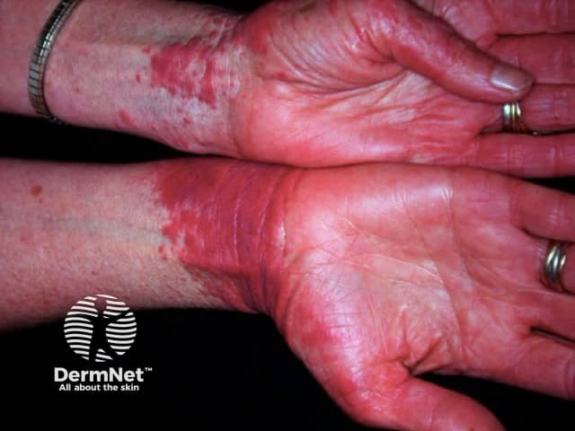
Здесь хорошо видно, как воспаление захватывает не только точки контакта, но и распространяется на запястья и прилегающие участки: характерная размытость границ, папуловезикулёзные элементы на отёчном эритематозном фоне. Так проявляется аллергический контактный дерматит: воспаление выходит за пределы зоны контакта.
Диагностика строится на аппликационных, или патч-тестах: стандартизованные аллергены фиксируют на коже спины на 48 часов, после чего оценивают реакцию. Положительный тест — эритема, папулы или везикулы под конкретным аллергеном — подтверждает сенсибилизацию именно к нему.
Патч-тестирование выявляет причинно значимый аллерген по местной реакции под каждой пробой.
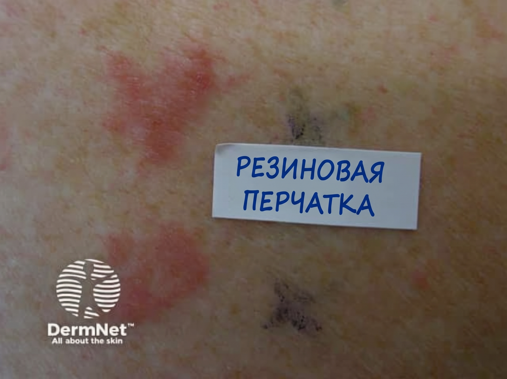
На снимке видны два эритематозных очага, а метка рядом указывает на резиновую перчатку. Сопоставьте реакцию с меткой: так результат связывают с конкретным аллергеном.
Лечение начинается с устранения контакта с аллергеном — без этого всё остальное лишь временно гасит симптомы. Системно назначают антигистаминные и гипосенсибилизирующие средства. Хлоропирамин детям 7–14 лет дают внутрь в разовой дозе 12,5 мг 2–3 раза в сутки в течение 10–20 суток; детям 1–6 лет разовая доза составляет 8,33 мг в том же режиме; детям 1–12 месяцев — 6,25 мг 2–3 раза в сутки в течение 10–20 суток. Местно применяют топические глюкокортикостероиды: они подавляют именно то звено воспаления — активность Т-лимфоцитов и выброс лимфокинов, — которое при аллергическом контактном дерматите является решающим.
Ключевое отличие аллергического контактного дерматита от простого: воспаление определяется не силой раздражителя, а иммунной памятью к нему — и потому возникает только у сенсибилизированных людей, строго на конкретный гаптен, с обязательным скрытым периодом после первого контакта.
Токсикодермия
Контактный дерматит возникает там, где раздражитель касается кожи снаружи. Токсикодермия — принципиально иное поражение: острая воспалительная реакция кожи и слизистых оболочек, развивающаяся тогда, когда раздражитель попадает в организм изнутри — через дыхательные пути, пищеварительный канал или при введении в вену, подкожно или внутримышечно. Кожа здесь не точка приложения, а мишень, которую поражает вещество, уже всосавшееся в кровь.
Этиологических факторов несколько. Чаще всего виновны лекарственные препараты — сульфаниламиды, анальгетики, антибиотики. Следом идут пищевые аллергены: яйца, мёд, цитрусовые, шоколад, грибы, клубника, рыбные продукты. Наконец, причиной могут служить профессиональные агенты и аутоаллергены. Системно применяемые лекарственные препараты способны вызывать симметричные и распространённые поражения — скарлатиноформную, многоформную или уртикарную сыпь.[5, с. 28]
По клинической картине токсикодермию делят на две совершенно не похожие друг на друга формы — распространённую и фиксированную. Их различия настолько принципиальны, что объединяет их только механизм: раздражитель действует изнутри.
Посмотрите на таблицу ниже — она сводит вместе ключевые признаки обеих форм, чтобы различие между ними было перед глазами. Но всё, что в ней стоит, разобрано и словами — читайте дальше.
| Признак | Распространённая форма | Фиксированная форма |
|---|---|---|
| Границы поражения | Диффузные, обширные; вся кожа и слизистые | Ограниченные пятна 2–3 см в диаметре |
| Морфология | Симметричные полиморфные высыпания: пятна, папулы, везикулы, уртикарные элементы; поражение слизистых | Отёчное гиперемированное пятно округлых или овальных очертаний, в центре — пузырёк; затем стойкая коричневая пигментация |
| Общие симптомы | Лихорадка, артралгии, недомогание, нарушение сна | Общие симптомы нехарактерны |
| Рецидивирование | При повторном контакте с аллергеном — диффузный рецидив | Строго на тех же местах; возможно присоединение новых очагов |
| Лечение | Детоксикация, антигистаминные препараты, при тяжёлых формах — кортикостероиды системно | Местные противовоспалительные и антисептические средства; при исключении аллергена возможно самопроизвольное разрешение |
Волдырь (urtica) — первичный бесполостной морфологический элемент, возникающий вследствие ограниченного островоспалительного отёка сосочкового слоя дермы. Он эфемерен: существует от нескольких минут до нескольких часов и исчезает бесследно. Обычно это аллергическая реакция немедленного, реже замедленного типа на эндогенные или экзогенные раздражители; волдыри встречаются при укусах насекомых, крапивнице и токсикодермиях. Клинически это плотноватый возвышающийся элемент округлых или неправильных очертаний, розовый, иногда с белесоватым центром, сопровождающийся зудом и жжением.
Распространённая форма — это то, что врач замечает с первого взгляда: симметричные полиморфные высыпания по всему телу. Могут появляться многочисленные пятнистые, уртикарные, папулёзные, папуловезикулёзные элементы, сопровождающиеся зудом; иногда развивается эритродермия. Нередко в процесс вовлекаются слизистые оболочки — на них возникают эритематозно-отёчные, геморрагические и буллёзно-эрозивные элементы. К кожным проявлениям присоединяются общие симптомы: лихорадка, артралгии, состояние недомогания, нарушение сна, раздражительность.
Фиксированная форма (её ещё называют сульфаниламидной эритемой) занимает несравнимо меньшую площадь. Возникает одно или несколько отёчных гиперемированных пятен округлых или овальных очертаний диаметром два-три сантиметра, в центре которых может сформироваться пузырёк.[5, с. 95] После прекращения действия препарата воспаление стихает, пятно приобретает тёмно-коричневый, гиперпигментный характер и сохраняется длительное время.[5, с. 95]
Самое важное свойство фиксированной формы — её «память». Если аллерген не попадает в организм повторно, можно обойтись без лечения. Но если тот же аллерген поступит снова, высыпания возникнут строго на прежних местах — иногда с присоединением новых очагов на ранее незатронутой коже.
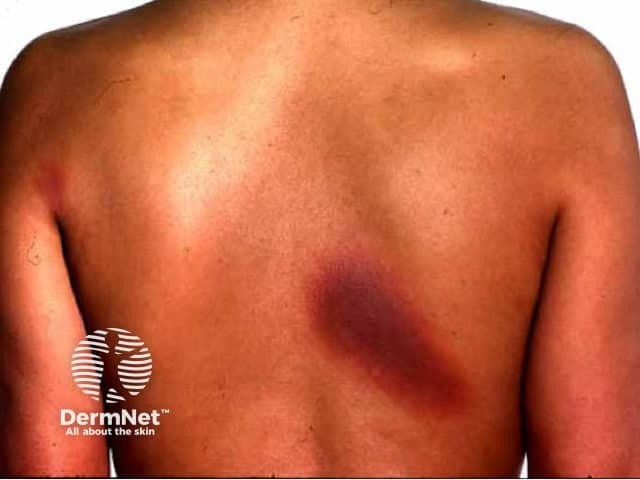
На этом снимке — характерный вид фиксированной токсикодермии на спине: крупное пятно с чёткими краями, интенсивно окрашенное, с тёмным центром. Именно такую картину даёт единственный повторно поражаемый участок. Сравните его с тем, как выглядит остальная кожа: граница резкая, остальная поверхность не изменена — это и есть «фиксированность» реакции.
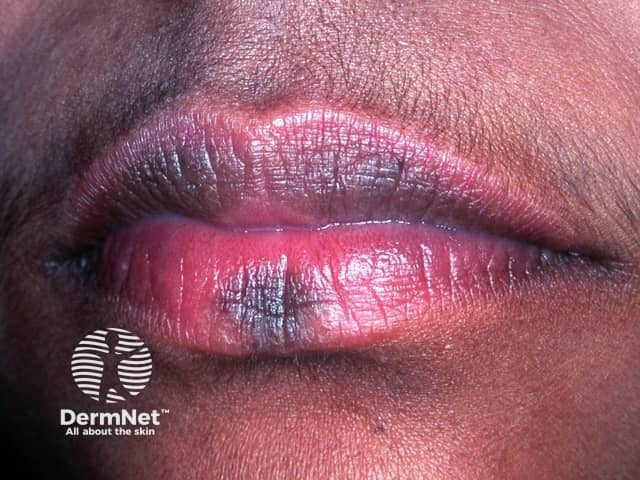
После того как острое воспаление проходит, остаётся стойкая гиперпигментация. На этом снимке видна периоральная область человека с тёмным фототипом кожи: губы и кожа вокруг них покрыты тёмными пятнами — это остаточная пигментация после разрешившейся фиксированной токсикодермии. Такая пигментация может держаться неделями и месяцами, и именно она служит ориентиром при повторном обострении: новый очаг появляется ровно там, где стоит это тёмное пятно.
Здесь уместно сравнение, которое помогает запомнить суть: фиксированная форма ведёт себя как след от удара о дверной косяк. Ударьтесь второй раз — синяк появится точно на том же месте, потому что ткань там уже была изменена. Организм «запомнил» участок первой реакции, и иммунный ответ воспроизводит её в той же точке.
Диагностика токсикодермии строится на нескольких опорах. Во-первых, жалобы и анамнез: нужно выяснить связь между появлением сыпи и приёмом лекарств или определённых продуктов — часто больной вспоминает об этом лишь после повторного расспроса. Во-вторых, клиническая картина: распространённость, симметричность, полиморфизм высыпаний. В-третьих, аллергологическое исследование — кожные пробы и иммунограмма, включая реакцию бласттрансформации лимфоцитов и тест дегрануляции лейкоцитов, подтверждающие повышенную чувствительность к конкретному аллергену.[5, с. 95]
Лечение начинается с устранения причины.[5, с. 95] При фиксированной форме, если аллерген исключён, достаточно местных противовоспалительных и антисептических средств — кортикостероидных мазей и анилиновых красителей. При распространённой форме необходимы детоксикация и системные антигистаминные препараты.
Наиболее тяжёлые варианты токсикодермии выделены в особые формы.[5, с. 95] Синдром Лайелла (токсический эпидермальный некролиз) — жизнеугрожающее состояние, при котором происходит массовый некроз и отслойка эпидермиса на обширных площадях кожи и слизистых; кожа отходит пластами, как после тяжёлого ожога. Среди лекарственных причин синдрома Лайелла антисудорожные средства составляют 11%: фентоин, карбамазепин, фенобарбитал и др.[5, с. 95] Синдром Стивенса–Джонсона — тяжёлая буллёзная реакция с поражением слизистых оболочек рта, глаз и половых органов на фоне высыпаний типа многоформной экссудативной эритемы.
На двух снимках — проявления синдрома Стивенса–Джонсона. На первом: нижняя половина лица, шея и верхняя часть груди — видны обширные буллёзные и эрозивные элементы, отёк, геморрагические корки на губах. Это поражение слизистых и прилежащей кожи, типичное для данного синдрома. На втором снимке — глаза того же пациента: выраженное покраснение конъюнктивы, отёк, сосудистая инъекция. Поражение глаз при синдроме Стивенса–Джонсона — не осложнение, а часть картины болезни, и именно оно нередко определяет прогноз для зрения. Оба снимка показывают, почему тяжёлые формы токсикодермии требуют стационарного лечения, а не амбулаторного наблюдения.
При синдроме Лайелла и синдроме Стивенса–Джонсона лечение проводится в стационаре; назначают системные кортикостероиды, интенсивную детоксикационную терапию, уход за поражёнными поверхностями по принципам лечения ожогов. Ключевое правило при любой форме токсикодермии — немедленно прекратить контакт с аллергеном: без этого шага любое лечение теряет смысл.

Экзема: определение, классификация, этиология и патогенез
Само слово «экзема» происходит от греческого eczeo — вскипать. Название точное: острая вспышка болезни действительно выглядит как кипение кожи — пузырьки лопаются один за другим, оставляя мокнущие точечные эрозии. Экзема — хроническое рецидивирующее заболевание, в основе которого лежит серозное воспаление дермы и эпидермиса; клинически оно проявляется полиморфной сыпью и сильным зудом. Болезнь поражает оба пола и все возрастные группы, течёт упорно, плохо поддаётся лечению и склонна к частым рецидивам.
Посмотрите, как выглядят два разных варианта этого заболевания. На снимке чуть ниже — пузырьки при везикулярной экземе: несколько округлых напряжённых пузырьков на пальце кисти. Они плотные, сидят в глубине кожи и почти не спадаются при надавливании — это характерная картина дисгидротического варианта, одной из разновидностей истинной экземы (идиопатической), при которой причина воспаления не связана с конкретным микробом или внешним контактом.

Рядом — дискоидная форма: слегка приподнятое розово-красное образование с чёткими краями. Это монетовидная экзема, один из вариантов микробной экземы, возникающей вследствие сенсибилизации кожи к микробным факторам — кокковой флоре, грибам, дрожжевым микроорганизмам. Форма бляшки здесь почти правильная, монетообразная — это один из признаков, отличающих её от истинной.
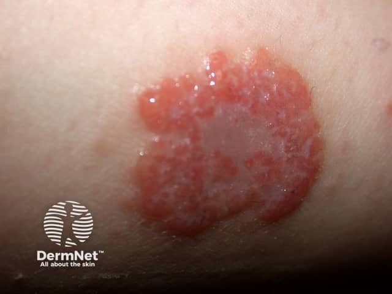
Классификация
Принято выделять пять основных форм экземы.
- Истинная (идиопатическая) и её клинические разновидности — дисгидротическая и тиллотическая.
- Микробная — включает монетовидную, паратравматическую и варикозную формы.
- Себорейная — развивается преимущественно на участках с высокой плотностью сальных желёз.
- Профессиональная — связана с сенсибилизацией к химическим веществам на производстве.
- Детская.
Особо отметим: разные формы могут трансформироваться друг в друга.
На снимке ниже — себорейная экзема у младенца: обширные высыпания в области пелёнок и подмышечных складок, а также типичные корки на волосистой части головы (так называемый «чепчик младенца»). Мокнутие при себорейной форме возникает редко и встречается почти исключительно в кожных складках; серозные «колодцы» и микровезикуляция, характерные для истинной экземы, здесь, как правило, отсутствуют.
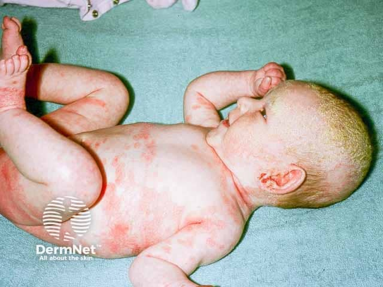
Этиология
Экзема формируется под действием сложного комплекса факторов: нейроэндокринных, метаболических, инфекционно-аллергических, вегетососудистых и наследственных. Ведущая роль, однако, принадлежит иммунологическим нарушениям — и здесь важно остановиться подробнее, потому что именно иммунный фон определяет и хроническое течение, и резистентность к лечению.
Обострения провоцируют психоэмоциональные стрессы, нарушения диеты, контакт с химическими аллергенами.[5, с. 99] При истинной экземе большое значение имеют рефлекторные влияния из центральной нервной системы и внутренних органов; при микробной и профессиональной — сенсибилизация соответственно к микроорганизмам или химическим веществам.[5, с. 99]
Патогенез: от иммунодефицита к мокнутию
Ключевое звено патогенеза — выраженные иммунные нарушения в сочетании с изменением уровня простагландинов и циклических нуклеотидов. Разберём цепочку по шагам.
В периферической крови снижается и относительное, и абсолютное количество Т-лимфоцитов, ослабевает функциональная активность лимфоцитов — и всё это сочетается с дисиммуноглобулинемией и повышением уровня циркулирующих иммунных комплексов (ЦИК). Функция естественных киллеров (NK-клеток) уменьшается более чем в 2 раза, и степень этого снижения коррелирует с тяжестью дерматоза. Активность Т-лимфоцитов-супрессоров, контролирующих синтез IgE, также снижена и не нормализуется по мере течения болезни. Всё вместе это формирует вторичный иммунодефицит — он и объясняет, почему экзема протекает хронически, с рецидивами.
Параллельно действуют неиммунологические механизмы. Нарушается белковый обмен в виде диспротеинемий и изменений аминокислотного состава плазмы. Уровень простагландинов в плазме крови возрастает в 4 раза, что нарушает систему циклических нуклеотидов — цАМФ и цГМФ, участвующих в регуляции иммунного ответа. Выявляются вегетодистонии с преобладанием симпатического тонуса; дисбаланс эндокринной системы охватывает гормоны широкого спектра — АКТГ, кортизол, тиреотропный и тиреоидные гормоны, инсулин, альдостерон.
Теперь — непосредственный механизм воспаления. В сенсибилизированном организме антиген встречается с антителом прямо на поверхности или внутри клеток эндотелия дермальных капилляров. Высвобождающиеся медиаторы — гистамин, серотонин, гепарин, брадикинин, ацетилхолин, медленно реагирующая субстанция и ряд других — активируют протеолитические ферменты из тромбоцитов и гранулоцитов. Проницаемость сосудистой стенки повышается. Жидкость пропитывает межклеточные пространства шиповатого слоя эпидермиса — формируется спонгиоз (от лат. spongia — губка): клетки раздвигаются накопившимся межклеточным отёком и образуют структуру, напоминающую губку. Клинически это выражается зудом, серопапулами на отёчном эритематозном фоне и мокнутием.
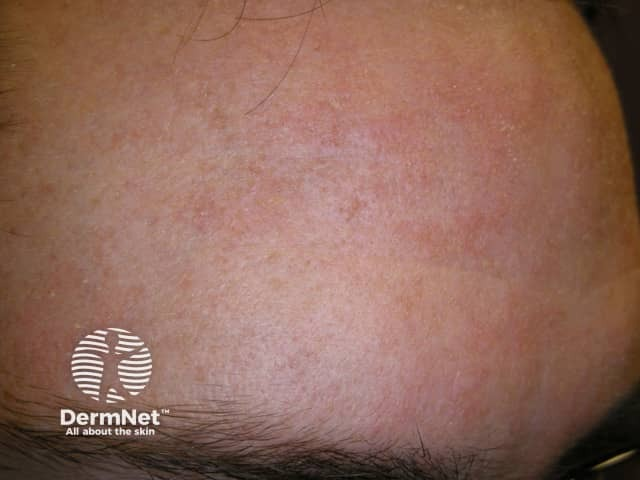
При микробной экземе вторичная иммунная недостаточность на фоне инфекционных антигенных раздражителей ведёт к персистенции микробных антигенов с образованием патологических иммунных комплексов — они и поддерживают хроническое воспаление в эпидермисе и дерме, что клинически отличает микробную экзему от банальной пиодермии.
Гистологическая картина
Под микроскопом в острой стадии видно следующее: паракератоз — сохранение ядер в клетках рогового слоя (в норме они должны исчезать при ороговении), очаговый спонгиоз шиповатого слоя, отёк сосочкового слоя дермы и расширение сосудов с периваскулярным лимфоцитарным инфильтратом. В хронической стадии на первый план выходит акантоз — утолщение шиповатого слоя эпидермиса за счёт увеличения числа клеток — и выраженный лимфогистиоцитарный инфильтрат в сосочковом слое дермы.[5, с. 99]
Три изменения — спонгиоз, акантоз, паракератоз — неслучайно идут вместе: спонгиоз отражает острое экссудативное воспаление, акантоз — хроническую пролиферативную реакцию эпидермиса на повреждение, паракератоз — нарушение нормального созревания кератиноцитов. Совокупность этих изменений с периваскулярным лимфоцитарным инфильтратом составляет гистологический портрет экземы и позволяет отличить её от других воспалительных дерматозов при биопсии.
Разбор случая
Что видит врач. На приёме — пациент с симметричными очагами на кистях: на отёчном красном фоне мельчайшие пузырьки, часть уже вскрылась и оставила точечные мокнущие эрозии; зуд интенсивный, анамнез — несколько лет, рецидивы без чёткой связи с контактом или инфекцией. В крови — снижение Т-лимфоцитов, повышение IgE и ЦИК.
Что врач из этого выводит. Симметричность, отсутствие явного триггера и лабораторный иммунный профиль указывают на истинную (идиопатическую) экзему. Очаговый спонгиоз подтверждается клинически — везикулы и серозные «колодцы» — и гистологически, если взята биопсия.
Что делает дальше. Назначает антигистаминные препараты: детям до 2 лет мебгидролин в суточной дозе 50—100 мг, детям 2—5 лет — 50—150 мг, детям 5—10 лет — 100—200 мг, детям старше 10 лет — 50—200 мг 1—2 раза в сутки в течение 10—20 суток. Детям старше 12 лет возможно назначение акривастина в дозе 8 мг 3 раза в сутки в течение 14—20 суток; детям 1—12 месяцев — хлоропирамин в разовой дозе 6,25 мг 2—3 раза в сутки. При мокнутии — противовоспалительные примочки с раствором танина 1—2% или амидопирина 0,25—0,5%; при инфицировании — водные или спиртовые растворы анилиновых красителей 1—2%. Диета предусматривает ограничение на 10—20% вводимой жидкости, поваренной соли и углеводов, повышающих воспалительный потенциал тканей и способствующих задержке воды.
Клиническая картина и дифференциальная диагностика форм экземы
Экзема — не одна болезнь, а несколько, объединённых общей морфологией и принципиально разных по причине, локализации и тактике лечения. Истинная, микробная и себорейная экземы имеют пересекающийся облик, и именно здесь ошибки диагностики случаются чаще всего. Разобраться в них — значит научиться читать кожу последовательно: сначала симметрия, потом границы, потом характер элементов.
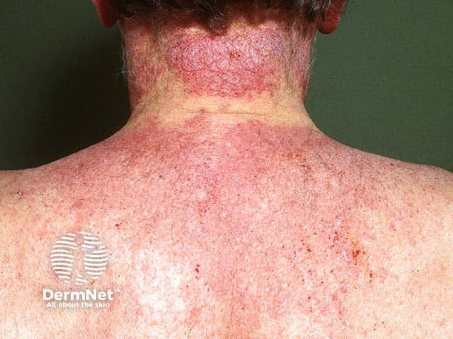
Истинная экзема
Истинная экзема начинается остро, нередко без очевидного внешнего повода, и быстро переходит в хроническое волнообразное течение.[5, с. 99] Её исходная клеточная основа — спонгиоз, то есть межклеточный отёк шиповатого слоя, который буквально раздвигает кератиноциты и формирует мелкие полости — микровезикулы.[5, с. 99]
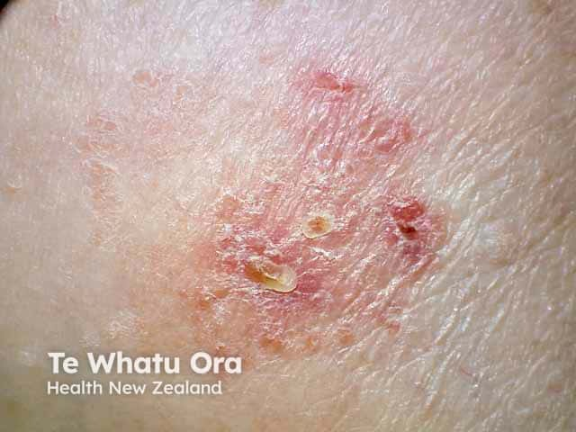
Посмотрите на снимок ниже: именно так выглядит везикулярный этап истинной экземы на пальцах.

На этом снимке видна цепочка полупрозрачных, напряжённых пузырьков, сидящих в толще кожи пальца. Обратите внимание: пузырьки не сливаются в один крупный очаг — они остаются мелкими и плотными, как зёрна. Это микровезикулы в момент, когда спонгиоз уже сформировал полость, но покрышка ещё не вскрылась. Именно с этого момента начинается тот признак, который отличает истинную экзему от всех остальных.
Везикулы вскрываются быстро, обнажая точечные эрозии — экзематозные колодцы (лат. erosiones punctatae): мельчайшие ямки, из которых каплями сочится прозрачный серозный экссудат. Именно отсюда второе название острой стадии — мокнущая экзема. На поверхности гиперемированной, отёчной кожи одновременно существуют свежие эритематозные пятна, серопапулы — маленькие узелки с крошечным пузырьком на вершине — вскрывшиеся эрозии, подсыхающие жёлто-бурые корочки и мелкое отрубевидное шелушение. Такое одновременное присутствие элементов разного возраста называют истинным полиморфизмом: сыпь появляется толчками, и в каждый момент на коже соседствуют начало, середина и конец одного цикла.
Два пространственных признака истинной экземы опорны для диагностики: симметричность очагов и их нечёткие границы. Поражённые участки не образуют единого сплошного пятна — они рассеяны и перемежаются островками нормальной кожи, напоминая архипелаг в море. «Архипелаг островов» — это не метафора, а клинический термин: именно так описывают рисунок экземы, когда здоровая кожа нормального цвета и эластичности вклинивается между очагами воспаления. Зуд при истинной экземе интенсивный и постоянный.
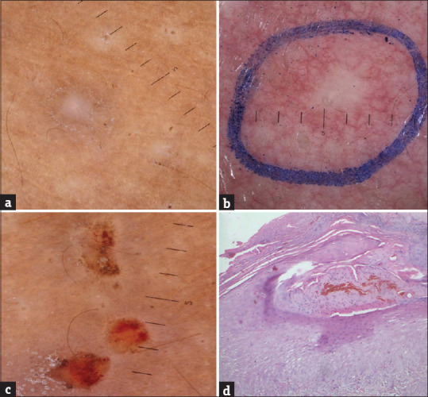
Микробная экзема
Микробная экзема начинается иначе: у неё всегда есть этиологический агент — бактерии, грибы, вирусы или токсины. Вокруг хронического гнойного очага, трофической язвы или инфицированной раны постепенно формируется папуло-везикулёзный очаг, который сливается в единый отёчный, гиперемированный участок.
В отличие от истинной экземы, этот очаг имеет чёткие границы и правильные, часто округлые или овальные очертания. Поверхность покрыта плотными серозно-гнойными корками; под ними — мокнущая эрозивная поверхность с ярко-красными точечными эрозиями. По краю очага тянется эпидермальный венчик — полоска отслаивающегося эпидермиса с фестончатыми очертаниями, под которой содержится серозно-гнойное отделяемое. Ещё дальше, на видимо здоровой коже вокруг, можно увидеть остиофолликулиты, импетигозные элементы и мелкие красные пятнышки — начальное воспаление волосяных фолликулов.
Здесь же появляются два термина, которые важно не перепутать. Аллергиды — симметричные аллергические высыпания, возникающие вдали от основного очага в ответ на сенсибилизацию к продуктам воспаления. Микробиды (или микробиды-аллергиды) — то же явление, но спровоцированное конкретно микробными антигенами: по периферии очага на видимо здоровой коже появляются рассеянные высыпания, свидетельствующие о нарастании сенсибилизации. Ключевая особенность микробной экземы в пространстве — асимметрия: очаги не зеркальны и не имеют тенденции к слиянию. Ещё один диагностический ориентир — эффект наружных дезинфицирующих и антипаразитарных средств: при микробной экземе они дают улучшение, тогда как при истинной практически не работают.
При нарастании сенсибилизации на местах вторичных высыпаний образуются сливные быстро вскрывающиеся мелкие пузырьки и точечные эрозии — и тогда микробная экзема трансформируется в истинную. Это важный клинический момент: форма болезни может меняться прямо на глазах у врача.
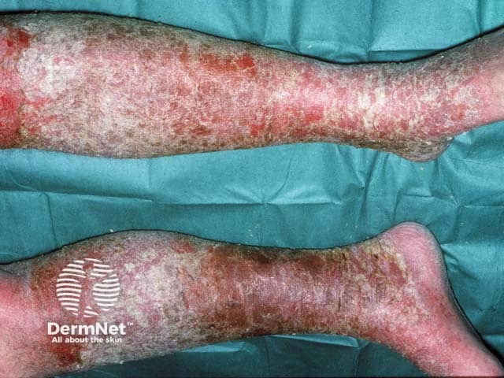
На снимке обеих голеней — наглядный пример того, как осложнённый очаг выглядит в реальности. Видно выраженное поражение с чёткими наружными границами, плотными корками и признаками хронического воспаления; по периферии заметны вторичные элементы. Именно такую картину — очаг с границей и периферической реакцией — следует искать, когда клиника указывает на микробную экзему с нарастающей сенсибилизацией.
Себорейная экзема
Себорейная экзема занимает свою экологическую нишу — участки с наибольшим числом сальных желёз. Элементы сыпи возникают на волосистой части головы и спускаются на лоб, щёки, ушные раковины, в заушные и шейные складки, нередко на грудь и межлопаточную область. На волосистой части головы на фоне сухой гиперемированной кожи формируются плотные чешуйки грязно-серого или буровато-жёлтого цвета, после снятия которых обнажается мокнущая поверхность.[5, с. 100]
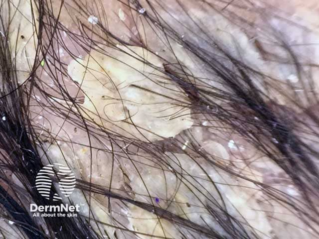
Вот как это выглядит при дерматоскопии: на снимке волосистой части головы видны приклеенные желтоватые чешуйки и межфолликулярные промежутки с воспалённым красным фоном. Плотные чешуйки не отлетают при потряхивании, как перхоть, а остаются на поверхности. Сравните: при истинной экземе на волосистой части головы экзематозные колодцы выражены, мокнутие диффузное; здесь же основной субстрат — корка и чешуйка, а мокнутие появляется только в складках.
Зуд при себорейной экземе непостоянен и заметно слабее, чем при истинной. Серозные колодцы и выраженная микровезикуляция отсутствуют. В складках и за ушными раковинами возможны мацерация, кровоточащие трещины, серозно-геморрагические корки. Частый спутник — блефарит: воспаление краёв век, которое развивается при вовлечении периорбитальной зоны и нередко служит ключом к диагнозу.
Дифференциальная диагностика трёх форм
Три формы легко спутать на первый взгляд — все они дают эритему, зуд и элементы на коже. Разобраться позволяет строгий порядок вопросов: симметрия → границы → характер элементов → наличие этиологического агента → ответ на дезинфектанты. Взгляните на таблицу — она собирает все пять осей сравнения в одном месте.
| Признак | Истинная экзема | Микробная экзема | Себорейная экзема |
|---|---|---|---|
| Симметрия очагов | Симметричная | Асимметричная | Относительно симметричная (по зонам сальных желёз) |
| Границы очага | Нечёткие, «архипелаг» | Чёткие, овальные или округлые | Чёткие |
| Характерные элементы | Серопапулы, экзематозные колодцы, истинный полиморфизм | Серозно-гнойные корки, эпидермальный венчик, пиогенные элементы, аллергиды | Грязно-серые или жёлтые чешуйки, корки; мокнутие только в складках; блефарит |
| Зуд | Интенсивный, постоянный | Умеренный | Непостоянный, слабее |
| Этиологический агент | Не определяется | Есть (микробы, грибы, вирусы) | Pityrosporum ovale, Candida, стафилококки |
| Эффект дезинфектантов | Минимальный | Выраженный | Частичный |
Разберём каждую строку словами — таблицу легко пролистать, и тогда эти различия должны остаться в тексте. По симметрии: истинная экзема всегда симметрична, микробная — принципиально нет, себорейная занимает симметричные зоны лишь потому, что сальные железы расположены симметрично, а не по механизму аллергического ответа. По границам: истинная расползается без края, микробная очерчена чётко и имеет эпидермальный венчик, себорейная тоже имеет чёткие границы — но без венчика и без серозно-гнойного содержимого под ним. По элементам: серопапулы и экзематозные колодцы — знак истинной экземы; серозно-гнойные корки с мокнущей поверхностью под ними и пиогенные элементы по периферии — знак микробной; плотные жёлто-серые чешуйки и блефарит — знак себорейной. По зуду: наиболее жестокий — при истинной, самый мягкий и непостоянный — при себорейной. По ответу на лечение: если наружные дезинфицирующие средства быстро улучшают картину — думайте о микробной экземе прежде всего.
Здесь важен порядок величин. При истинной экземе лечение антигистаминными препаратами растягивается на 14—20 суток при акривастине в дозе 8 мг трижды в сутки у детей старше 12 лет. Детям младшего возраста — мебгидролин: до 2 лет 50—100 мг в сутки, детям 2—5 лет 50—150 мг в сутки, детям 5—10 лет 100—200 мг в сутки, детям старше 10 лет 50—200 мг за 1—2 приёма курсом 10—20 суток. Хлоропирамин самым маленьким — детям 1—12 месяцев — назначают по 6,25 мг 2—3 раза в сутки. При микробной экземе к этому обязательно добавляют антибиотик — схема усложняется и удлиняется. Разница в объёме лечения между себорейной и микробной экземой — это разница между наружной противогрибковой терапией и системным курсом антибиотиков: примерно в 3—4 раза по числу задействованных препаратов и в 2 раза по длительности. Именно поэтому точный диагноз — не академический вопрос, а прямой расчёт риска полипрагмазии.
При мокнутии, которое сопровождает все три формы в острой стадии, назначают противовоспалительные примочки: раствор танина 1—2% или раствор амидопирина 0,25—0,5%. При инфицировании очагов добавляют водные и спиртовые растворы анилиновых красителей 1—2%. Диета при экземе предусматривает ограничение на 10—20% вводимой жидкости, поваренной соли и углеводов — они повышают воспалительный потенциал тканей и способствуют задержке воды.
Вывод прост: симметрия и чёткость границ делят три формы экземы между собой быстрее любого анализа. Всё остальное — характер элементов, зуд, этиологический агент, ответ на дезинфектанты — лишь подтверждает то, что кожа уже сказала взгляду.
Диагностика и лечение экземы
Кажется, что экзема — это просто «раздражённая кожа», и лечить её достаточно снаружи: помазал мазью, зуд прошёл. На деле экзема — системный аллергический процесс, и без воздействия на внутренние звенья патогенеза наружные средства дают лишь временное облегчение, а рецидив следует за рецидивом. Именно поэтому диагностика строится на лабораторных и функциональных методах, а лечение всегда комплексное.
Диагностические критерии
Диагноз экземы складывается из нескольких пластов: жалобы и аллергологический анамнез, клиническая картина, лабораторные данные и результаты кожных проб.
Из клинических признаков особого внимания заслуживает красный дермографизм — реакция кожи на механическое раздражение, при которой на месте штрихового давления вместо обычной белой полосы появляется стойкая красная. Это отражает изменённую реактивность поверхностных сосудов и считается одним из характерных, хотя и неспецифических, маркёров экзематозного процесса.
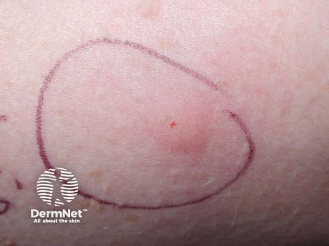
Лабораторно ориентируются на два показателя: эозинофилию в клиническом анализе крови и повышение концентрации IgE в сыворотке. Оба отражают аллергическую природу заболевания и помогают разграничить экзему с другими зудящими дерматозами. Кожные аллергические пробы позволяют установить конкретный причинно значимый аллерген — информация, без которой невозможно провести полноценную элиминацию.
Патогистологическая картина зависит от стадии: в острой фазе находят паракератоз, очаговый спонгиоз, отёк сосочкового слоя дермы и расширение сосудов с периваскулярным лимфоцитарным инфильтратом.
Диета
Питание — не второстепенный фон, а часть лечебной программы. Общий принцип — элиминационная диета: из рациона полностью убирают продукты, которые выступают потенциальными аллергенами или усиливают воспаление. Исключают мясные бульоны, острые и пряные приправы, консервированные продукты, кофе, какао, молоко, шоколад. Рекомендуют вегетарианские супы, отварное мясо и рыбу, кисломолочные продукты, овощи.
Помимо исключения аллергенов, диета предусматривает ограничение на 10—20% вводимой жидкости, поваренной соли и углеводов: они повышают воспалительный потенциал тканей, оказывают сенсибилизирующее влияние и способствуют задержке воды. Молочно-растительная направленность рациона сохраняется и в период ремиссии как мера профилактики рецидивов.
Системная терапия
Системное лечение ведётся по нескольким направлениям одновременно.
Основа — противозудные антигистаминные препараты. Применяют средства разных поколений в зависимости от возраста пациента и выраженности симптомов. Мебгидролин назначают внутрь: детям до 2 лет — 50—100 мг в сутки, детям 2—5 лет — 50—150 мг в сутки, детям 5—10 лет — 100—200 мг в сутки. Детям старше 10 лет — 50—200 мг 1—2 раза в сутки в течение 10—20 суток. Акривастин детям старше 12 лет назначают внутрь в дозе 8 мг 3 раза в сутки в течение 14—20 суток. Хлоропирамин детям 1—12 месяцев — по 6,25 мг 2—3 раза в сутки в течение 10—20 суток.
Неспецифические десенсибилизирующие средства — соли натрия, кальция, магния — снижают общую сенсибилизацию организма. При выраженном психовегетативном компоненте подключают седативные средства и транквилизаторы: триоксазин, сибазон, мезапам, нитразепам, нозепам (по 0,001—0,05 г 3 раза в день), а также растительные препараты — персен, новопассит, афобазол — по согласованию с неврологом.
Иммуномодулирующая терапия включает натрия нуклеинат (деринат) внутрь в течение 2—3 недель, аминокапроновую кислоту, адаптогены — элеутерококк, экстракт алоэ, прополис. При резком обострении назначают кортикостероидные препараты. При микробной экземе схему дополняют антибиотиками — азитромицином, ампициллином, гентамицином или доксициклином (последний противопоказан детям до 9 лет) в дозах, рассчитанных по массе тела и возрасту. Для детей старше 12 лет также указана схема приёма внутрь по 500 мг 4 раза в сутки в течение 6—8 суток.[1, с. 46]
Местная терапия по стадиям
Принцип наружного лечения прост и строг: лекарственная форма должна соответствовать стадии процесса. Посмотрите на таблицу ниже — она показывает, как форма препарата меняется вслед за клинической картиной и почему нельзя сразу «мазать мазью».
| Стадия | Лекарственная форма | Препараты |
|---|---|---|
| Острая — мокнутие | Холодные примочки, часто сменяемые | Sol. amidopyrini 0,25—0,5%; Sol. ac. Tannici 1—2%; 1—2% раствор жидкости Бурова; аэрозоли с кортикостероидами (оксикорт, поликорталон) |
| Подострая — мокнутие стихает | Пасты, водные болтушки | Цинковая паста, циндол; оказывают противовоспалительное и подсушивающее действие, успокаивают зуд |
| Хроническая — сухость, лихенификация | Кремы и мази с кортикостероидами; кератопластические мази | Белодерм, афлодерм, локоид, элоком; нафталанская нефть, препараты с дёгтем |
| Инфицирование очагов | Водные и спиртовые растворы; комбинированные препараты ГКС + антибиотик | Анилиновые красители 1—2%; акридерм ГК; гентамицин/бетаметазон, бетаметазон/фузидовая кислота, гидрокортизон/фузидовая кислота — 2 р/сут в течение 7—14 сут |
Разберём каждую строку, потому что логика смены форм — не формальность, а физиология. В острой стадии, когда на коже мокнутие и серозные «колодцы», единственно правильный выбор — холодные примочки, часто сменяемые. Раствор амидопирина в концентрации 0,25—0,5% или танина в концентрации 1—2% оказывают противовоспалительное и вяжущее действие, уменьшают экссудацию. Жирная мазь в этот момент закупорила бы поры, задержала экссудат и усилила воспаление — именно поэтому её не используют при мокнутии.
Как только мокнутие стихает, переходят к пастам и болтушкам. Они подсушивают, снимают зуд и не препятствуют газообмену кожи.
В хроническую стадию, когда преобладают сухость и лихенификация, приходит время мазей. Здесь уместны кортикостероидные кремы и мази — белодерм, элоком, локоид. Отдельно стоит сказать о кератопластических мазях — препаратах, которые восстанавливают нормальное ороговение кожи, нарушённое при хроническом воспалении. К ним относятся средства с нафталанской нефтью, берёзовым дёгтем, АСД. Они не просто смягчают, а стимулируют правильное созревание рогового слоя.
При инфицировании очагов — отдельная ситуация. Посмотрите на снимок ниже: именно так выглядят везикулы при везикулярной экземе до присоединения инфекции.

На этом снимке видны мелкие округлые прозрачные пузырьки на пальце и ладони — содержимое серозное, стенка пока не замутнена. Когда содержимое мутнеет и появляются пустулы, это сигнал инфицирования. В таком случае к наружному лечению добавляют водные или спиртовые растворы анилиновых красителей в концентрации 1—2%, а затем переходят к комбинированным препаратам, сочетающим кортикостероид с антибиотиком: акридерм гента, гентамицин/бетаметазон, бетаметазон/фузидовая кислота — 2 раза в сутки в течение 7—14 суток.
Профилактика рецидивов
Главный вывод из всей логики лечения экземы: устранить причину важнее, чем снять симптом. Профилактика рецидивов строится на трёх принципах: устранение причинно значимых аллергенов, санация очагов хронической инфекции как источников сенсибилизации и соблюдение молочно-растительной диеты в период ремиссии. Без этого даже самая грамотно подобранная системная и местная терапия даёт лишь временный эффект.
Атопический дерматит: понятие, патогенез, атопический марш
Атопический дерматит (dermatitis atopica) — это аллергическое заболевание кожи с наследственной предрасположенностью, которое характеризуется хроническим рецидивирующим зудящим поражением кожи и сопровождается поливалентной гиперчувствительностью — то есть одновременной или последовательной сенсибилизацией сразу к нескольким неродственным аллергенам: пищевым, бытовым, пыльцевым.[3, с. 17] В развитых странах заболеваемость атопическим дерматитом у детей составляет 13–37%, у взрослых — 0,2–2%. Эта разница не случайна: с возрастом нервная регуляция созревает, внешние провоцирующие факторы начинают действовать слабее, и часть больных выходит в длительную ремиссию.
В основе болезни лежит полигенное наследование — наиболее верной сегодня считается модель мультифакторного наследования в виде полигенной системы с пороговым дефектом.[3, с. 17] Это означает: ни один ген сам по себе не приговаривает человека к болезни, но их сумма, перейдя порог, делает развитие атопии при встрече с триггером почти неизбежным. Наследуется не болезнь, а предрасположенность, и реализуется она лишь под действием провоцирующих факторов среды.
Центральный механизм патогенеза — неполноценность кожного барьера, связанная с нарушением синтеза керамидов. Керамиды — это липидные молекулы, которые в норме заполняют пространство между клетками рогового слоя, удерживая влагу и не пропуская аллергены внутрь: представьте их кирпичным раствором в стене из корнеоцитов. Не будь этого барьера, коже пришлось бы отражать каждый внешний раздражитель уже иммунными силами, что немедленно вело бы к воспалению. При атопическом дерматите именно так и происходит: дефицит керамидов делает кожу сухой и проницаемой, аллергены и ирританты беспрепятственно проникают в дерму, запуская иммунный ответ. Следствием становится повышение уровня иммуноглобулина E в сыворотке крови — один из ключевых лабораторных маркёров атопии.
Параллельно с барьерным дефектом работает иммунологический механизм. Неполноценность иммунного ответа повышает восприимчивость кожи к вирусным, бактериальным и грибковым инфекциям.[3, с. 17] Особую роль здесь играют суперантигены бактериального происхождения — прежде всего Staphylococcus aureus: они активируют огромные клоны Т-лимфоцитов, минуя обычный антиген-специфический путь, и поддерживают хроническое воспаление кожи даже в периоды кажущегося затишья.[3, с. 17]
Существенную роль в картине болезни играет психоэмоциональный статус. Для больных атопическим дерматитом характерны черты интравертности, депрессивности, напряжения и тревожности.[3, с. 17] Это не просто психологический фон: изменяется реактивность вегетативной нервной системы, а вместе с ней — реактивность сосудов и пиломоторного аппарата.[3, с. 17] Именно поэтому у таких больных закономерно обнаруживается белый дермографизм — при проведении тупым предметом по коже вместо обычной красной полоски появляется белая, что отражает парадоксальный спазм поверхностных сосудов. В той же логике — резко усиленный пиломоторный рефлекс: волоски на коже поднимаются в ответ на минимальное раздражение, избыточно и стойко. Оба признака имеют динамический характер — нарастают при обострении и ослабевают в ремиссию.
Теперь посмотрим на то, что происходит с атопическим дерматитом во времени — и здесь обнаруживается одна из самых важных его особенностей. Дети, у которых атопический дерматит появился в раннем возрасте, входят в группу риска по развитию атопической бронхиальной астмы и аллергического ринита.[3, с. 17] Эту закономерную смену мишеней аллергии принято называть атопическим маршем.
Атопический марш разворачивается в три этапа. Первый — сама кожа: атопический дерматит манифестирует, как правило, на первом году жизни, в возрасте от 0 до 2 лет, когда регулирующие системы ребёнка ещё несовершенны и внешние провоцирующие факторы действуют особенно сильно. Второй этап — аллергический ринит, который присоединяется позже, когда формируется сенсибилизация к ингаляционным аллергенам. Третий — бронхиальная астма: те же иммунные механизмы, что уже были запущены в коже, реализуются теперь в дыхательных путях. Марш — именно марш, а не случайное совпадение: дефект барьера и поливалентная гиперчувствительность, сформировавшиеся в младенчестве, создают готовую почву для атопических болезней всё более глубоких анатомических уровней. Чем раньше и тяжелее дебютировал атопический дерматит, тем выше риск, что шествие не остановится на коже.
Главный вывод раздела: атопический дерматит — не изолированная болезнь кожи, а системное атопическое заболевание с полигенным наследованием, в основе которого лежат дефект керамидового барьера, суперантигенная активация и вегетативная дисрегуляция; манифестируя в первые два года жизни, он нередко открывает атопический марш — последовательное вовлечение дыхательных путей в виде аллергического ринита и бронхиальной астмы.
Возрастная динамика клиники атопического дерматита
Атопический дерматит — не одна болезнь с постоянным лицом, а болезнь, которая меняет облик по мере взросления пациента. Локализация высыпаний, их морфология и ведущие жалобы у двухмесячного младенца и у тридцатилетнего взрослого настолько различны, что без знания возрастной периодизации поставить диагноз при первом осмотре очень трудно. Принято выделять три последовательных периода: младенческий, детский и взрослый.
Младенческая стадия АтД охватывает возраст от двух месяцев примерно до двух лет. В абсолютном большинстве случаев имеется чёткая связь с алиментарными раздражителями — то есть попросту с едой: введением прикорма, смесей, антибиотиков. Начальные изменения появляются прежде всего на щеках, причём носогубный треугольник остаётся чистым и резко отграничен от поражённой кожи щёк; если высыпания всё же захватывают и носогубный треугольник, это признак очень тяжёлого течения. Реже в процесс вовлекаются наружные поверхности голеней и другие участки, вплоть до диссеминированного поражения.

Посмотрите на снимок ниже — перед вами типичная картина младенческого периода: диффузное покраснение обеих щёк, отёчность, характерная для острой экссудативной фазы.
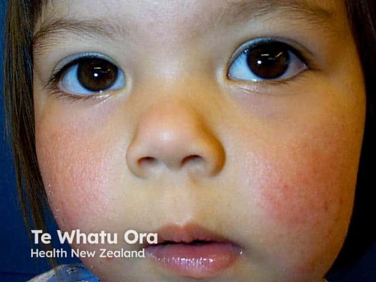
На этом снимке хорошо видны складки на нижних веках — это симптом Денни–Моргана, о котором пойдёт речь ниже, однако здесь он уже намечен. Первичные элементы в младенческом периоде — эритематоотёчные и эритематосквамозные очаги; при более остром течении к ним присоединяются папуловезикулы, трещины, мокнутие, корки.[3, с. 20] Ранним, почти патогномоничным признаком служат молочные корки — жирные бурые корки на волосистой части головы, плотно спаянные с покрасневшей кожей под ними.[3, с. 20] К концу первого — началу второго года жизни экссудативные явления обычно уменьшаются, на смену им приходят инфильтрация и шелушение, появляются лихеноидные папулы.[3, с. 20]
Детская стадия АтД охватывает возраст от трёх лет до пубертата. Главное, что меняется, — локализация: высыпания уходят с лица на сгибательные поверхности. Типичные места — локтевые сгибы, подколенные ямки, задняя поверхность шеи. Там формируются лихенифицированные бляшки.
Здесь необходимо объяснить ключевой термин. Лихенификация — это уплотнение и утолщение кожи с усилением её естественного рисунка, то есть попросту кожа становится грубее, рельефнее, почти как кора дерева, и хорошо видны бороздки между кожными полями. Посмотрите на два снимка: на первом — усиленный кожный рисунок на тёмной коже, классическая лихенификация в зоне сгиба.
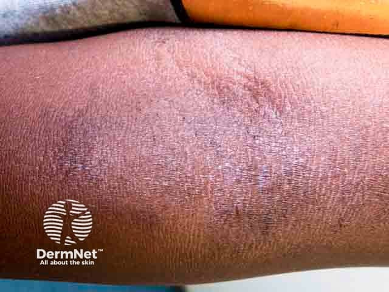
Второй снимок — экскориации и лихенификация в области колена: хорошо виден двойной удар — механический (расчёсы) и воспалительный (уплотнение кожи).
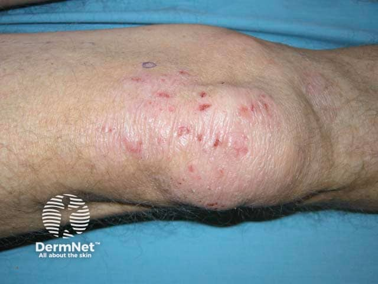
В детской стадии появляются характерные изменения лица. Формируется атопический хейлит — поражение красной каймы губ и прилегающей кожи с максимальной выраженностью в углах рта; при этом часть каймы у слизистой оболочки и сама слизистая остаются незатронутыми.[3, с. 21] После стихания острых явлений красная кайма инфильтрируется, шелушится, покрывается множественными тонкими радиарными бороздками; трещины в углах рта сохраняются долго после ремиссии.[3, с. 21] Кроме того, к концу этого периода формируется симптом Денни–Моргана — глубокая складка на нижнем веке, особенно заметная в фазе обострения, а также пигментация на нижних веках и нередко поредение наружной трети бровей.[3, с. 21]
Взрослая стадия АтД характеризуется меньшей склонностью к острым воспалительным реакциям. Ведущая жалоба — кожный зуд; острое мокнутие уходит на второй план. Клинически преобладают лихенифицированные очаги, экскориации и лихеноидные папулы.[3, с. 21] Экземоподобные реакции возникают преимущественно в периоды обострений.[3, с. 21] Характерны выраженная сухость кожи, стойкий белый дермографизм и резко усиленный пиломоторный рефлекс.[3, с. 21]
На снимке ниже — лихенифицированный атопический дерматит спины у взрослого с поствоспалительной дисхромией: обратите внимание на неравномерную пигментацию рядом с уплотнёнными бляшками — это след многолетнего воспалительного процесса.
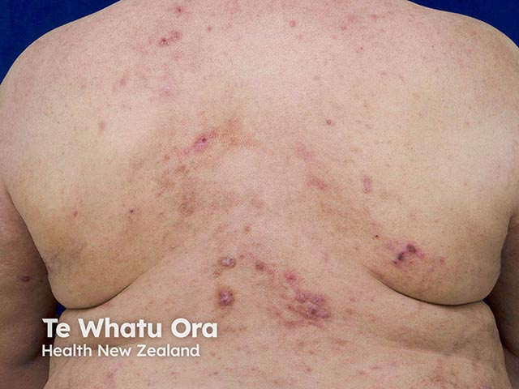
У взрослых выделяют три клинические формы по преобладающему типу высыпаний: лихеноидную (диффузную) с биопсирующим зудом и выраженной лихенификацией, экземоподобную и пруригоподобную. На следующем снимке хорошо видна поствоспалительная депигментация — характерный след лихенификации у взрослых пациентов.
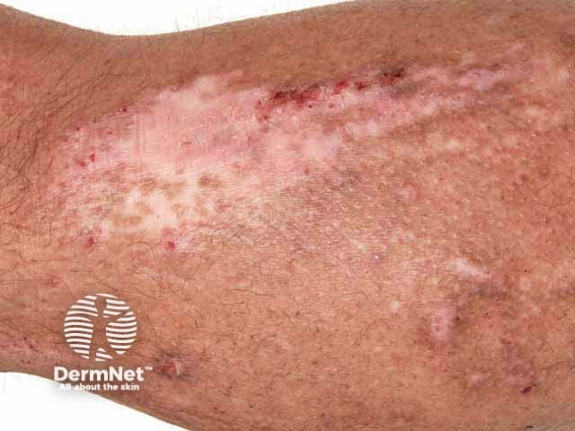
Все три периода и их главные отличия можно сравнить в таблице ниже.
| Период | Возраст | Типичная локализация | Ведущая морфология | Главные жалобы и признаки |
|---|---|---|---|---|
| Младенческая стадия | 2 мес — 2 года | Щёки (минус носогубный треугольник), разгибательные поверхности, волосистая часть головы | Эритема, отёк, везикулы, мокнутие, молочные корки | Интенсивный зуд, связь с алиментарными факторами, экссудация |
| Детская стадия | 3 года — пубертат | Локтевые сгибы, подколенные ямки, задняя поверхность шеи, периоральная зона | Лихенифицированные бляшки, экскориации, атопический хейлит | Хронический зуд, симптом Денни–Моргана, дисхромии |
| Взрослая стадия | После пубертата | Лихенифицированные очаги диффузно, верхняя часть спины, лицо | Лихеноидные папулы, экскориации, сухость; экземоподобные реакции в обострение | Зуд, белый дермографизм, усиленный пиломоторный рефлекс |
Как видите в таблице, каждый период — это сдвиг сразу по трём осям: локализация, морфология и ведущий симптом. Младенца беспокоит мокнущая щека, школьника — зудящий и грубеющий локтевой сгиб, взрослого — диффузная сухость с лихенификацией и белый дермографизм вместо красного, типичного для экземы. Именно эта последовательная смена картины и отличает АтД от других дерматозов с хроническим течением.
Важно понимать, что периодизация соблюдается далеко не у всех пациентов: у одного ребёнка всё разворачивается строго по стадиям, у другого — картина взрослого периода складывается уже в школьном возрасте. Поэтому ориентироваться нужно не только на возраст, но и на совокупность признаков.
Относительно течения болезни в целом выделяют три варианта.[3, с. 19] Первый — выздоровление до двух лет; он встречается наиболее часто. Второй — выраженная манифестация до двух лет с последующими ремиссиями, то есть рецидивирующее течение. Третий — непрерывное течение без длительных ремиссий.[3, с. 19] В настоящее время нарастает частота третьего варианта, что связывают с ухудшением экологической обстановки, ростом контакта с аллергенами и влиянием психологических стрессов.[3, с. 19] Снижение числа больных в старших возрастных группах объясняется тем, что с возрастом совершенствуются регулирующие системы организма и слабее проявляется действие внешних провоцирующих факторов — у маленького ребёнка они работают на полную мощность.[3, с. 19]
Диагностика, осложнения и лечение атопического дерматита
Диагностика атопического дерматита (АтД) строится на клинических критериях — лабораторных тестов, которые подтвердили бы диагноз однозначно, не существует. Основой служат критерии, принятые на Первом международном симпозиуме по атопическому дерматиту, разделённые на главные и вспомогательные признаки.[3, с. 18]
| Основные критерии | Дополнительные критерии |
|---|---|
| Зуд — выражен в разной степени, усиливается вечером и ночью | Ксеродерма (сухость кожи) |
| Типичная морфология и локализация: у детей — лицо, разгибатели, туловище; у взрослых — лихенификация на сгибателях | Ихтиоз |
| Семейная или индивидуальная атопия в анамнезе: бронхиальная астма, аллергический риноконъюнктивит, крапивница, экзема | Ладонная гиперлинейность |
| Начало в детском возрасте, нередко с грудного | Фолликулярный кератоз |
| Хроническое рецидивирующее течение с обострениями весной и в осенне-зимнее время; сезонный характер проявляется не ранее 3—4 лет | Повышенный уровень IgE в сыворотке крови |
| Склонность к стафилодермиям | |
| Склонность к неспецифическим дерматитам кистей и стоп | |
| Дерматит грудных сосков | |
| Хейлит | |
| Кератоконус | |
| Передняя субкапсулярная катаракта | |
| Рецидивирующий конъюнктивит | |
| Потемнение кожи периорбитальной области | |
| Инфраорбитальная складка Денни—Моргана | |
| Бледность или эритема лица | |
| Белый питириазис |
Посмотрите на таблицу: левая колонка — это пять признаков, без которых диагноз не ставится. Правая — шестнадцать дополнительных. Разберём их прозой, потому что одной таблицы мало.
Первый и главный основной критерий — зуд. Он присутствует всегда, причём его особенность — нарастание к вечеру и ночью, что связано с суточным биологическим ритмом. Второй критерий — характерная возрастная динамика высыпаний: у грудных детей поражается лицо и разгибательные поверхности, у взрослых — сгибательные поверхности с грубой лихенифицированной кожей. Третий критерий — семейная или индивидуальная атопия: бронхиальная астма, аллергический риноконъюнктивит, экзема в анамнезе пациента или его родственников.[3, с. 18] Четвёртый — начало в детском возрасте, нередко ещё в грудном, — нередко спровоцированное введением прикорма, назначением антибиотиков или сменой климата. Пятый — хроническое рецидивирующее течение с сезонными обострениями весной и в осенне-зимний период; эта черта проявляется, как правило, не ранее 3—4 лет, хотя у части больных течение непрерывное и внесезонное.
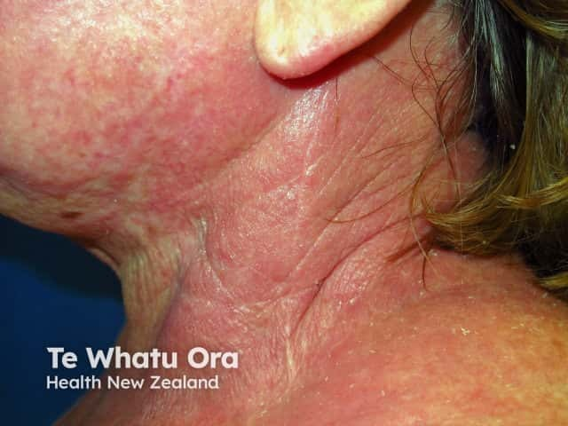
Дополнительные критерии — сухость кожи, ладонная гиперлинейность, фолликулярный кератоз, повышенный IgE — усиливают уверенность в диагнозе. Среди них особого внимания заслуживает передняя субкапсулярная катаракта, входящая в понятие синдрома Андогского — сочетание АтД с поражением хрусталика. Это не частая, но серьёзная находка: пациент с многолетним тяжёлым АтД должен периодически осматриваться офтальмологом.[3, с. 18]

На снимке выше — крупный план кожи с фолликулярным кератозом: множество мелких красноватых точечных папул, каждая из которых соответствует устью волосяного фолликула. Этот признак относится к дополнительным критериям АтД. Представьте поверхность наждачной бумаги средней зернистости — примерно так выглядит и ощущается на ощупь кожа с выраженным фолликулярным кератозом. Сравнение здесь не украшение: именно тактильное ощущение зернистости помогает отличить этот признак при осмотре от просто сухой кожи.
Триггеры АтД и их контроль
Прежде чем назначать лечение, необходимо найти и устранить триггеры АтД — факторы, провоцирующие обострение. Их делят на алиментарные, психогенные, метеорологические и инфекционные.[3, с. 22] Исключение триггеров нередко само по себе даёт выраженное улучшение, иногда вплоть до полной ремиссии, и снижает потребность в медикаментах.
В младенческой фазе болезни на первый план выходят пищевые факторы. Их выявить помогает тщательное ведение пищевого дневника: родители записывают всё съеденное и время появления обострений — и закономерность становится видна.[3, с. 22] С возрастом роль пищевых аллергенов снижается, зато возрастает значение ингаляционных: клещи домашней пыли (Dermatophagoides pteronyssinus и D. farinae), шерсть животных, пыльца. Психогенные факторы — стресс, тревога, нарушения сна — провоцируют обострения через изменение реактивности вегетативной нервной системы. Метеорологические условия объясняют сезонность: холодный сухой воздух усиливает трансэпидермальную потерю воды, нарушенный и без того кожный барьер ухудшается ещё сильнее.
Осложнения
Неполноценность иммунного ответа при АтД делает кожу уязвимой для инфекций. Наиболее частые бактериальные осложнения — пустулизация и импетигинизация: на фоне экзематозных очагов появляются гнойные корки и пустулы, возбудитель — чаще золотистый стафилококк.
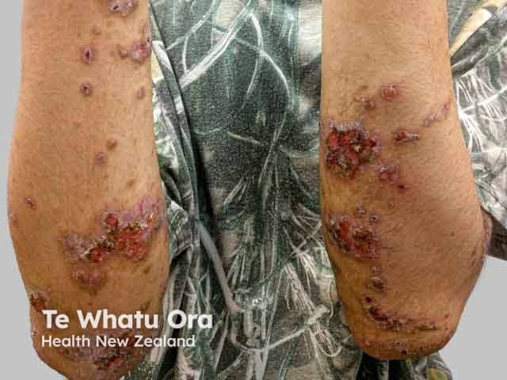
Посмотрите на этот снимок: обе руки подростка покрыты эрозиями с жёлто-бурыми корками — картина импетигинизированного АтД. Обратите внимание, что поражение симметричное и захватывает именно локтевые ямки и предплечья — типичную для АтД у подростков локализацию. Именно такая картина должна насторожить: начинают применяться наружные антисептики и, при необходимости, системные антибиотики.
Тяжёлое вирусное осложнение — герпетиформная экзема Капоши (иначе — вакциниформный пустулёз Юлиусберга): диссеминированная инфекция вирусом простого герпеса на фоне повреждённого кожного барьера. Пузырьки с пупковидным вдавлением высыпают волнами на лице, шее и туловище, сопровождаются высокой лихорадкой и интоксикацией. Это состояние требует госпитализации и системного противовирусного лечения.
При длительном существовании воспалительных изменений развивается дерматогенная лимфаденопатия — реактивное увеличение лимфатических узлов, дренирующих зоны поражения. Узлы могут быть значительно увеличены и плотной консистенции, что приводит к диагностическим ошибкам — их принимают за лимфому или туберкулёзный лимфаденит. Ключ к разгадке — связь с активностью кожного процесса: успешное лечение дерматита приводит к уменьшению узлов.
Системная терапия
Лечение АтД должно быть комплексным и учитывать тяжесть процесса. Антигистаминные препараты составляют основу системной противозудной терапии. При лихеноидной форме используют препараты с седативным компонентом. При экземоподобной форме к терапии добавляют атаракс (гидроксизин) или циннаризин — по 2 таблетки 3 раза в день в течение 7—10 дней, затем по 1 таблетке 3 раза в день. Цетиризин применяют как противозудное средство без выраженной седации. При тяжёлом зуде, особенно нарушающем сон, предпочтение отдаётся препаратам с седативным эффектом.
При стойких расстройствах ночного сна и раздражительности рекомендуются небольшие дозы атаракса (25—75 мг в день, в раздельной дозировке в течение дня и на ночь); при стойкой бессоннице назначают снотворные препараты.[3, с. 24]
При тяжёлом обострении показан короткий курс системных глюкокортикостероидов: применяют бетаметазон, максимальная суточная доза — 3—5 мг с постепенной отменой по достижении клинического эффекта, максимальная продолжительность — 14 дней.[3, с. 24] Длительное назначение системных ГКС при АтД нежелательно из-за неизбежных побочных эффектов.
При тяжёлых обострениях, устойчивых к ГКС, возможно применение циклоспорина А — иммуносупрессора, избирательно подавляющего активность Т-лимфоцитов. При выраженных тревожных и депрессивных расстройствах, усугубляющих течение болезни, к лечению добавляют психотропные препараты — транквилизаторы и антидепрессанты.
Наружная терапия и базовый уход
Наружное лечение строится по принципу: острее воспаление — мягче форма. При мокнутии применяют примочки с вяжущими и противовоспалительными растворами. При инфицировании очагов назначают водные и спиртовые растворы анилиновых красителей в концентрации 1—2%.
При лёгких и умеренных обострениях используют короткие курсы топических ГКС — кремов и мазей, содержащих глюкокортикостероиды. Их противовоспалительное, противозудное и антипролиферативное действие позволяет быстро снять обострение, однако длительное непрерывное применение на чувствительных участках (лицо, кожные складки) нежелательно из-за риска атрофии.[3, с. 24]
Альтернативой и дополнением к топическим ГКС служат ингибиторы кальциневрина — препараты, блокирующие синтез провоспалительных цитокинов в Т-лимфоцитах без атрофогенного эффекта. Основной представитель для наружного применения — пимекролимус (элидел). Его применяют при умеренных обострениях, а также в качестве поддерживающей терапии на лице и в складках, где топические ГКС нежелательны.[3, с. 24]
Неотъемлемая часть лечения — базовые средства ухода: эмоленты, увлажняющие и восстанавливающие кожный барьер. Их наносят регулярно, вне зависимости от активности процесса: кожа больного АтД теряет воду активнее, чем здоровая, из-за нарушения синтеза церамидов.
Физиотерапия (УФО, лазеротерапия) и климатотерапия применяются как дополнение в период ремиссии. Вывод, который следует запомнить: ни один из перечисленных методов не лечит АтД окончательно — задача терапии состоит в контроле над болезнью: устранении триггеров, купировании обострений и поддержании ремиссии за счёт регулярного ухода за кожей.
Кожный зуд и ограниченный нейродермит
Зуд — самый частый симптом в дерматологии, и именно с него начинается большинство обращений к врачу. Но за привычной жалобой может стоять совсем разная патология: от локальной кожной реакции до болезни крови или злокачественной опухоли.
Кожный зуд делят на два вида. Универсальный зуд — это зуд по всему кожному покрову, без чётких границ и без первичных высыпаний. Ограниченный зуд — зуд на строго определённом участке: в перианальной области, на вульве, в уретре. Разграничить их важно уже при первом расспросе, потому что причины и логика обследования у них разные.
Универсальный зуд нередко оказывается симптомом системного заболевания. Он может сигнализировать о болезнях крови, обменных нарушениях, поражении печени и почек, аутоинтоксикации при патологии желудочно-кишечного тракта, новообразованиях или глистной инвазии. Разновидности универсального зуда — старческий, сезонный (возникает летом как начальный симптом фотодерматоза), высотный (при подъёме на высоту) и аутотоксический — от некоторых пищевых продуктов или лекарств. Ограниченный зуд чаще обусловлен энтеробиозом, воспалительными изменениями в области вульвы, уретры или прямой кишки, либо ограниченным вегетоневрозом с местным нарушением микроциркуляции и трофики.
Теперь — разбор того, что врач видит и что из этого следует.
Шаг первый: что видит врач. На коже пациента нет первичных элементов сыпи — ни пятен, ни папул, ни везикул. Зато есть экскориации и геморрагические корочки. И главное — полированные ногти: ногтевые пластинки приобретают блестящую, отполированную поверхность, потому что пациент постоянно расчёсывает кожу, и ногти буквально шлифуются об неё. Это объективный признак зуда — то, что нельзя симулировать и что врач видит сам, без слов пациента.
Шаг второй: что из этого выводит врач. Картина без первичных элементов, но с экскориациями и полированными ногтями говорит: зуд здесь первичен, а повреждения кожи — его следствие. Теперь нужно понять, откуда зуд. Врач назначает общий анализ крови и мочи, биохимию крови, анализ кала на яйца гельминтов и скрытую кровь, рентгенографию органов грудной клетки, УЗИ органов брюшной полости и функциональное обследование щитовидной железы. Каждый из этих шагов ищет свою причину: анализ крови — болезни системы крови и паразитозы, биохимия — печень и почки, рентген и УЗИ — новообразования.
Шаг третий: что делает дальше. Лечение строится в два слоя. Первый — этиотропный: найденное системное заболевание лечат по его собственным правилам. Второй — симптоматический. Назначают десенсибилизирующие средства, антигистаминные препараты, при необходимости — транквилизаторы. Наружно применяют 1–2% ментол, взбалтываемые взвеси с ментолом и анестезином, 2–3% спиртовые или водные растворы уксусной, карболовой или салициловой кислоты — они охлаждают кожу и прерывают порочный круг зуд–расчёс. При ограниченном зуде, если нет противопоказаний, добавляют топические кортикостероидные кремы.
Антигистаминные препараты, которые используют при зудящих дерматозах, — те же, что и при других аллергических заболеваниях кожи. Дозы подбирают по возрасту: так, хлоропирамин назначают детям 1–12 месяцев в разовой дозе 6,25 мг 2–3 раза в сутки, детям 1–6 лет — 8,33 мг 2–3 раза в сутки, детям 7–14 лет — 12,5 мг 2–3 раза в сутки, детям старше 14 лет — 25 мг 2 раза в сутки в течение 10–20 сут. Акривастин детям старше 12 лет назначают внутрь по 8 мг 3 раза в сутки курсом 14–20 сут.
Отдельного внимания заслуживает ограниченный нейродермит — хроническое воспалительное зудящее поражение кожи на строго очерченном участке. Он может быть ограниченным проявлением атопического дерматита, а может существовать вне связи с атопией — как самостоятельная форма, развивающаяся на фоне гормональных расстройств. Излюбленные места: задняя поверхность шеи, область голеностопных суставов, половые органы.
Очаг ограниченного нейродермита устроен по-особому, и понять его строение помогает представление о трёх концентрических зонах. В центре — зона лихенификации: кожа утолщена, кожный рисунок грубый, нормальные треугольные и ромбические поля кожи резко увеличены. Средняя зона — папулёзная: здесь рассыпаны плоские блестящие папулы. Периферическая зона — гиперпигментированная, без инфильтрации, с неровной окраской. Зуд при ограниченном нейродермите мучительный, особенно усиливается ночью; расчёсывание разрушает поверхность очага и поддерживает воспаление.
Ключевой вывод раздела: зуд без первичных элементов — это всегда повод сначала исключить системную патологию, и только потом лечить симптоматически; полированные ногти и экскориации — объективное свидетельство хронического зуда, которое врач видит сам.
Ихтиоз
Ихтиоз (синонимы: кератома диффузная, сауриаз) — наследственное заболевание, при котором нарушается ороговение кожи и на её поверхности появляются чешуйки, напоминающие рыбью чешую.[5, с. 136] Это не один дерматоз, а целая группа: вульгарный ихтиоз, Х-сцепленный рецессивный, ихтиозиформная эритродермия и ихтиоз плода. Каждая форма отличается по наследованию, биохимическому дефекту и клинической картине — и именно эти различия определяют тактику ведения больного.
Ихтиоз вульгарный — наиболее распространённая форма, составляющая 80—95% от всех форм ихтиоза. Это значит, что на вульгарный ихтиоз приходится примерно в 5–12 раз больше случаев, чем на все остальные формы вместе взятые. На практике это важно: большинство пациентов с ихтиозом, которых вы увидите в жизни, будут именно с вульгарным. Тип наследования аутосомно-доминантный, заболевание проявляется обычно на 3-м месяце жизни или несколько позже, до 2—3 лет.
В основе вульгарного ихтиоза лежит ретенционный гиперкератоз — накопление рогового слоя не из-за усиленного деления клеток, а из-за замедленного отшелушивания. Механизм такой: в роговом слое накапливаются гликозаминогликаны, которые играют роль цемента между роговыми клетками и мешают их нормальному отторжению.[5, с. 18] Гистологически при этом выявляется дефект синтеза кератогиалина — белка, необходимого для формирования зернистого слоя. Зернистый слой истончён или вовсе отсутствует, тогда как пролиферативная активность эпидермиса не нарушена. Иными словами, клетки рождаются в нормальном темпе, но не могут вовремя «уйти».
Клинически это выглядит как диффузное поражение кожи туловища и конечностей: чешуйки разных размеров и цвета — от белесоватых до серо-чёрных, кожа сухая и шершавая на ощупь.[5, с. 136] Сильнее всего изменения выражены на разгибательных поверхностях конечностей, особенно в области локтей и колен. Посмотрите на снимок ниже:
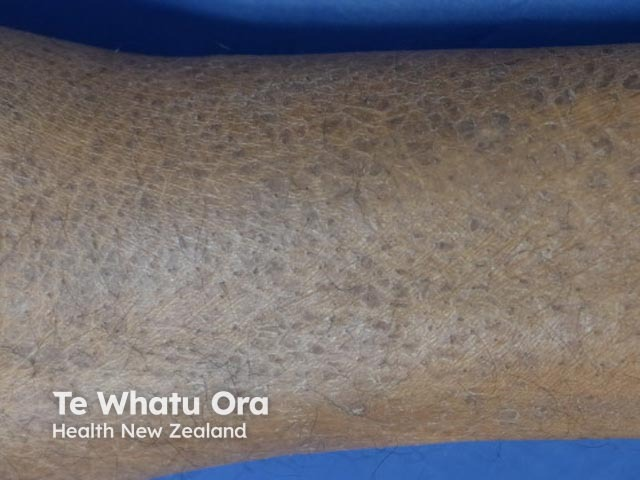
На этом снимке хорошо видна характерная для вульгарного ихтиоза картина: кожа конечности покрыта мелкими сухими чешуйками с отчётливым сетчатым узором. Обратите внимание на равномерность поражения по всей поверхности — именно так выглядит ретенционный гиперкератоз при жизни. Рисунок кожи на ладонях при вульгарном ихтиозе тоже меняется: кожный рисунок становится сетевидным, с изменениями дерматоглифики и небольшим муковидным шелушением.
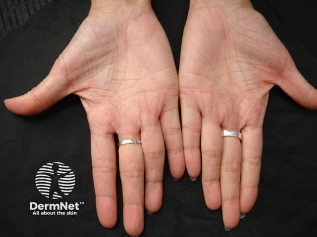
На этом снимке — ладони пациента с вульгарным ихтиозом, раскрытые и обращённые вверх. Видно усиление кожного рисунка, сухость и муковидное шелушение в бороздах. Принципиальная деталь: шея и сгибательные поверхности локтевых и коленных суставов, а также подмышечные ямки не поражены.[5, с. 136] Это — типичная черта вульгарного ихтиоза, которая помогает в дифференциальной диагностике. Характерен также фолликулярный кератоз — мелкие суховатые узелки в устьях волосяных фолликулов.[5, с. 136]
Х-сцепленный рецессивный ихтиоз устроен принципиально иначе. Генная мутация проявляется биохимическим дефектом — отсутствием фермента стероидсульфатазы (фермент, расщепляющий холестеролсульфат в роговом слое) в эпидермальных клетках и лейкоцитах.[5, с. 137] Из-за этого холестеролсульфат накапливается в роговом слое и сыворотке крови, увеличивает сцепление клеток между собой и замедляет нормальную десквамацию.[5, с. 137] Клинически заболевание развивается в полном объёме только у мальчиков, в первые месяцы жизни (реже с рождения): поражается весь кожный покров, включая кожные складки — в 30% случаев.[5, с. 136] Ладони и подошвы остаются интактными. Чешуйки при Х-сцепленном ихтиозе крупные и тёмные — коричневато-чёрного цвета, плотно сидящие, с многочисленными мелкими трещинами рогового слоя и крупными щитками грязно-серого или бурого цвета; кожа напоминает змеиную или панцирь ящерицы.[5, с. 137]
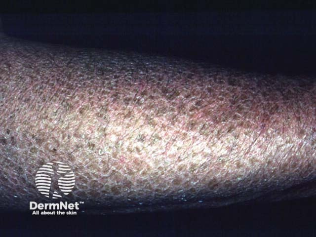
На этом снимке — крупный план кожи при Х-сцепленном ихтиозе. Виден отчётливый полигональный сетчатый рисунок тёмных плотных чешуек. Зернистый слой при этой форме нормальный, не истончён — в отличие от вульгарного ихтиоза, при котором он редуцирован.[5, с. 137] Это принципиальное гистологическое различие между двумя самыми частыми формами.
Сравните обе формы в таблице ниже — она собирает ключевые различия в одном месте.
| Признак | Ихтиоз вульгарный | Х-сцепленный рецессивный |
|---|---|---|
| Тип наследования | Аутосомно-доминантный | Х-сцепленный рецессивный |
| Биохимический дефект | Дефект синтеза кератогиалина | Дефицит стероидсульфатазы, накопление холестеролсульфата |
| Поражение складок | Нет (щажение сгибов) | Да (в 30% случаев) |
| Зернистый слой | Истончён или отсутствует | Нормальный |
| Чешуйки | Мелкие, светлые (белесоватые, серые) | Крупные, тёмные (коричневато-чёрные) |
| Ладони и подошвы | Сетевидный рисунок, муковидное шелушение | Не поражены |
| Фолликулярный кератоз | Характерен | Отсутствует |
Как видите в таблице, ключевое практическое различие — поражение складок. У пациента с ихтиозом и изменениями в подмышечных и паховых складках нужно думать об Х-сцепленной форме, а не о вульгарной. Ещё одно: тёмные крупные чешуйки тоже характерны именно для Х-сцепленного варианта — тёмные чешуйки описаны как признак некоторых разновидностей ихтиоза. При вульгарном они светлее и мельче. Фолликулярный кератоз и изменения ладоней — вульгарный; их отсутствие при тяжёлом распространённом процессе — повод пересмотреть диагноз.
Две другие формы — тяжёлые и встречаются несравнимо реже. Ихтиозиформная эритродермия — это группа заболеваний, при которых ороговение сочетается с эритродермией (распространённым покраснением кожи). Буллёзная форма (эпидермолитический гиперкератоз — нарушение ороговения с разрушением клеток эпидермиса, то есть эпидермолизом) гистологически проявляется вакуолизацией цитоплазмы клеток зернистого и шиповатого слоёв, повышенной митотической активностью.[5, с. 139] Нарушается образование тонофибрилл, нарушаются межклеточные связи, и в коже образуются пузыри.
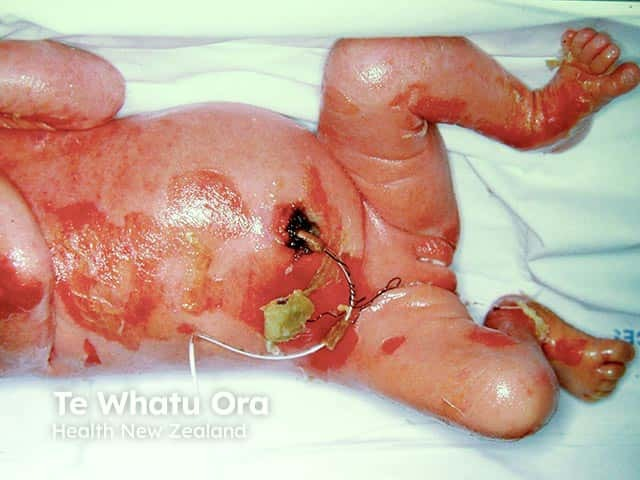
На этом снимке — новорождённый с буллёзной ихтиозиформной эритродермией. Видны диффузное покраснение кожи туловища и конечностей, участки эрозий. Именно в периоде новорождённости картина наиболее тяжёлая: множество пузырей, эрозий, эритродермия. С возрастом количество пузырей резко уменьшается, а ороговение усиливается — к 3—4-му году жизни отчётливо выявляется гиперкератоз в виде толстых коричневых веррукозных наслоений. Ихтиоз плода — наиболее тяжёлая форма, проявляющаяся уже внутриутробно выраженным панцирным гиперкератозом; такие дети, как правило, не выживают.
Сопутствующая патология при ихтиозе — не случайная находка, а закономерное следствие. У больных вульгарным ихтиозом имеются функциональная недостаточность эндокринной системы (щитовидной и половых желёз) в сочетании с иммунодефицитным состоянием: снижена активность В- и Т-клеточного иммунитета, выражена склонность к аллергическим заболеваниям, особенно к атопическому дерматиту, при низкой сопротивляемости пиококковым и вирусным инфекциям.[5, с. 136] Расстройства рогообразования при ихтиозе напрямую способствуют генерализации микоза: нарушенный роговой слой — питательная среда и барьерная «брешь» для грибков, и именно ихтиоз назван среди факторов, которые способствуют генерализации микоза гладкой кожи, обусловленного красным трихофитоном.[3, с. 85]
Лечение ихтиоза — это длительная системная работа, а не разовый курс. Основа системной терапии — ретиноиды (тигазон, неотигазон) из расчёта 0,5—1,0 мг/кг в сутки в течение 2—3 месяцев и более (до 1 года) в зависимости от клинической картины, с постепенным снижением дозы.[5, с. 139] Витамин А и его производные показаны в первую очередь при нарушениях рогообразования: при ихтиозе и кератодермиях их применяют длительно в высоких суточных дозах.[5, с. 37] При врождённой ихтиозиформной эритродермии возможны повторные курсы витаминов А (400 000 ЕД/сут).[5, с. 139] Наружно используют кератолитические мази — средства, размягчающие и отслаивающие избыточный роговой слой. Показаны солевые ванны (100 г хлорида натрия или морской соли на ванну).[5, с. 139] При буллёзной ихтиозиформной эритродермии в периоде новорождённости назначают кортикостероидные гормоны (преднизолон из расчёта 0,75—3,5 мг/кг в сутки) в сочетании с антибиотикотерапией, анаболическими гормонами, гемодезом — это позволяет значительно ослабить клиническую картину ихтиоза в дальнейшем.[5, с. 139]
Врождённый буллёзный эпидермолиз
Кажется, что кожа — прочный орган: она защищает от внешнего мира, выдерживает трение, удары, тепло. На деле прочность кожи держится на молекулярных «замках» — белках, которые скрепляют слои между собой. Стоит одному из этих белков оказаться дефектным из-за мутации в гене, и кожа начинает пузыриться от прикосновения пелёнкой или давления пальца. Именно это происходит при буллёзном эпидермолизе — группе наследственных буллёзных дерматозов, при которых пузыри возникают на коже и слизистых оболочках при незначительной травматизации или даже спонтанно.[5, с. 141]
В пределах этой группы описано более 10 различных форм заболевания, объединённых в три основных типа: простой, соединительный и дистрофический.[5, с. 141] Они различаются уровнем, на котором происходит расщепление, типом наследования и тяжестью исходов. Посмотрите на сравнение этих типов в таблице ниже — она собирает главные различия в одном месте.
| Тип | Наследование | Уровень расщепления | Рубцевание | Поражение слизистых |
|---|---|---|---|---|
| Простой | Аутосомно-доминантный | Внутриэпидермальный (цитолиз кератиноцитов) | Нет | Минимальное или отсутствует |
| Соединительный (пограничный) | Аутосомно-рецессивный | Lamina lucida эпидермо-дермального соединения | Атрофические изменения | Выражено (рот, гортань, трахея) |
| Дистрофический | Аутосомно-доминантный или рецессивный | Субэпидермальный (ниже базальной мембраны) | Грубые рубцы, милиумы | Возможно |
Простой тип — наиболее доброкачественная форма. Наследуется аутосомно-доминантно: достаточно дефекта в одной копии гена. Расщепление происходит внутри эпидермиса — в результате дезинтеграции и цитолиза кератиноцитов базального слоя. Этим объясняется главная клиническая особенность: пузыри заживают без рубцевания, без атрофии и без образования милиумов.[5, с. 141] Симптом Никольского отрицательный, акантолитические клетки в содержимом пузыря отсутствуют — и этим простой тип сразу отличается от акантолитической пузырчатки.[5, с. 141]
Первые признаки появляются обычно на первом году жизни, иногда уже при рождении. Пузыри размером от 0,5 до 7 см и более возникают на неизменённой коже в местах типичной травматизации: кисти, стопы, спина, локтевые и коленные суставы, затылочная область.[5, с. 141] Через несколько дней пузыри вскрываются, образуют эрозии, покрывающиеся корками, и быстро эпителизируются, не оставляя следов.[5, с. 141] Слизистые и ногти или не поражаются, или их изменения минимальны. Пузырей больше в тёплое время года при выраженном гипергидрозе. В постпубертатный период их количество уменьшается, хотя они появляются на протяжении всей жизни.[5, с. 141]
Одна из форм простого типа — форма Вебера–Кокейна, абортивный локализованный вариант. При ней пузыри образуются только на коже кистей и стоп и только летом, при выраженном ладонно-подошвенном гипергидрозе.[5, с. 141] Это практически самый мягкий сценарий при буллёзном эпидермолизе.
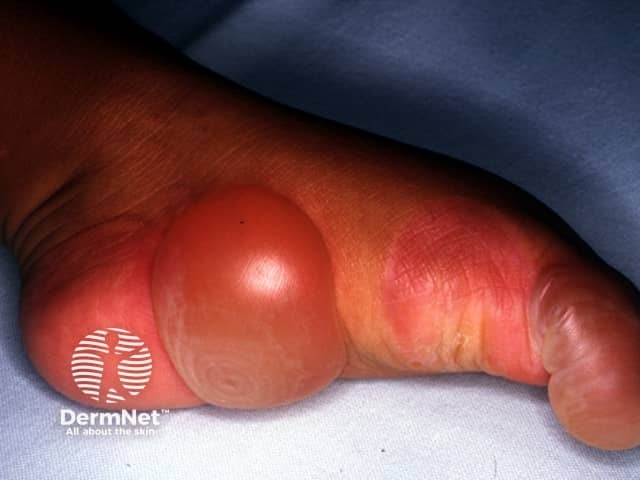
На этом снимке — стопа с крупным напряжённым полупрозрачным пузырём. Обратите внимание: кожа вокруг выглядит внешне неизменённой, без признаков острого воспаления, и это характерно для простого типа. Пузырь возник там, где кожа испытывает максимальную механическую нагрузку при ходьбе — именно стопа и кисть остаются самой частой локализацией на протяжении всей жизни пациента.
Соединительный, или пограничный, тип принципиально отличается. Он наследуется аутосомно-рецессивно и затрагивает lamina lucida — тонкую прозрачную пластинку эпидермо-дермального соединения, расположенную между плазматической мембраной базальных кератиноцитов и базальной мембраной кожи.[5, с. 141] Именно здесь, в этой узкой зоне, и происходит расщепление. Как видите в таблице, этот уровень глубже, чем при простом типе, — и последствия соответственно серьёзнее.
Процесс начинается уже при рождении или в первые дни жизни, а в течение нескольких дней генерализуется.[5, с. 141] Основная локализация — кожа груди, головы, слизистые оболочки рта, гортани, трахеи.[5, с. 141] Поражение слизистых — принципиальный признак, которого нет при простом типе. При этом кожа кистей и стоп может оставаться внешне неизменённой, однако ногтевые пластинки дистрофичны и развивается анонихия — полное отсутствие ногтей.[5, с. 141] Ещё один характерный признак — акроостеолиз: рассасывание концевых фаланг пальцев, которое возникает как следствие хронического поражения мягких тканей.[5, с. 141]
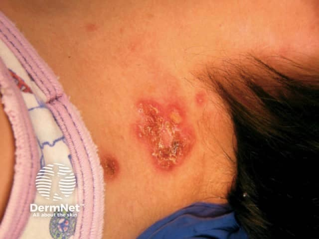
На этом крупном плане в области шеи или верхней части груди видны очаги, характерные для поражения при буллёзном эпидермолизе: отслоение эпидермиса с образованием эрозий и следы заживления. Именно такая картина — эрозии на фоне внешне неизменённой кожи, без выраженного воспалительного вала — типична для соединительного типа, где расщепление происходит на уровне lamina lucida, а не в воспалённой дерме.
Теперь о диагностике. Клиническая картина при рождении у новорождённого с пузырями требует дифференциального диагноза с двумя другими состояниями. Эпидемическая пузырчатка новорождённых — стафилококковое поражение, при котором пузыри возникают на коже туловища, спины, в складках, но не на ладонях и подошвах; состояние сопровождается температурой до 38 °C и нарушением общего состояния ребёнка.[5, с. 47] Сифилитическая пузырчатка новорождённых напротив: поражаются ладони и подошвы, пузыри плотные с инфильтрацией в основании, из содержимого выявляется бледная трепонема, серореакции положительные.[5, с. 47] При буллёзном эпидермолизе проявления видны обычно уже при рождении, а пузыри возникают при малейшей травматизации кожи — этот механизм и отличает его от обеих инфекционных форм.[5, с. 47]
Для точного установления типа и формы используют электронную микроскопию биоптата кожи: только она позволяет определить точный уровень расщепления — внутриэпидермальный, на уровне lamina lucida или субэпидермальный ниже базальной мембраны. Пренатальная диагностика простого типа возможна по высокому содержанию α-фетопротеина в сыворотке крови беременной во II триместре.[5, с. 141] Соединительный тип диагностируется пренатально с помощью биопсии кожи 18-недельного плода на основании выявления характерных изменений.[5, с. 141]
Лечение при всех типах буллёзного эпидермолиза остаётся симптоматическим: этиотропной терапии не существует. Цель — защита кожи от травматизации, уход за эрозиями, предупреждение инфицирования. Это возвращает нас к понятию недостаточности кожи — состоянию, при котором кожный покров утрачивает способность выполнять барьерную функцию на больших площадях. Тяжёлый буллёзный эпидермолиз, как и ихтиоз плода, относится к этим состояниям: потеря жидкости, нарушение терморегуляции и риск сепсиса при обширных эрозиях создают угрозу жизни по тем же механизмам, что и при тяжёлых ожогах. Главный вывод из патогенеза прост: чем глубже уровень расщепления, тем тяжелее исход и тем дальше идут системные последствия утраты кожного барьера.
Итоговое сравнение аллергодерматозов и принципы ведения пациентов
Контактный дерматит, аллергический дерматит, токсикодермия, экзема и атопический дерматит — пять болезней, которые студент нередко воспринимает как один большой «аллергический зуд». Между тем у каждой свой механизм запуска, своя морфология и своя логика лечения. Посмотрите на сравнительную таблицу ниже — она позволяет увидеть эти различия рядом, а не по отдельным главам.
| Признак | Контактный дерматит (простой) | Аллергический контактный дерматит | Токсикодермия | Экзема | Атопический дерматит |
|---|---|---|---|---|---|
| Путь воздействия аллергена | Прямое раздражение кожи | Контактная сенсибилизация (кожа) | Системный путь (per os, в/в, ингаляция) | Сложный мультифакторный | IgE-опосредованный, наследственный фон |
| Тип иммунного ответа | Неиммунный (раздражение) | ГЗТ (тип IV) | Тип I и/или тип IV, цитотоксические реакции | Реакция антиген–антитело на эндотелии капилляров, спонгиоз | Тип I (IgE) + тип IV, дисфункция барьера кожи |
| Основные морфологические элементы | Эритема, отёк, везикулы строго по площади контакта | Везикулы, папуловезикулы, эрозии — за пределами зоны контакта | Пятна, уртикарии, папулы, геморрагии — симметрично, распространённо | Истинный полиморфизм: эритема, папулы, везикулы, серозные «колодцы», корки, лихенификация | Экзематозные, лихеноидные и пруригинозные элементы; лихенификация в сгибах |
| Ключевое отличие течения | Разрешается при устранении раздражителя | Разрешается при устранении аллергена; рецидив при повторном контакте | Разрешается при отмене причинного агента | Хроническое рецидивирующее; возможна трансформация форм друг в друга | Возрастная периодизация; стойкий зуд, резистентность к лечению |
| Основа лечения | Устранение раздражителя, наружные ГКС | Устранение аллергена, топические ГКС, патч-тест для идентификации | Отмена причинного препарата/агента, антигистаминные, при тяжёлом течении — системные ГКС | Диета, антигистаминные, наружные и системные ГКС по стадии | Диета, триггер-контроль, топические ГКС и ингибиторы кальциневрина, климатотерапия |
Разберём таблицу строку за строкой, потому что схема без слов — это просто сетка.
По пути воздействия аллергена нозологии делятся на две группы. Контактные дерматиты — простой и аллергический — работают снаружи: раздражитель или аллерген попадает прямо на кожу. Морфология при этом привязана к месту: при простом контактном дерматите поражение строго совпадает с площадью контакта, при аллергическом — выходит за её пределы, потому что включается системный иммунный ответ. Токсикодермия — принципиально иная ситуация: агент попадает в организм системно, через рот, инъекцию или дыхательные пути, и сыпь появляется симметрично и распространённо, нередко с геморрагическим компонентом. Экзема занимает особое место: её патогенез мультифакторный — иммунологические, нейроэндокринные, метаболические и инфекционно-аллергические факторы переплетаются, а поражение кожи возникает вследствие реакции антиген–антитело внутри или на поверхности сенсибилизированных клеток эндотелия дермальных капилляров. Атопический дерматит стоит ближе к экземе по хроническому зудящему течению, но имеет наследственный фон и чёткую IgE-опосредованную составляющую.
По типу иммунного ответа: простой контактный дерматит — единственный в этом ряду, где нет иммунного механизма как такового; это прямое раздражение. Аллергический контактный дерматит — классическая гиперчувствительность замедленного типа (тип IV), отсюда латентный период сенсибилизации и диагностика с помощью патч-тестов под окклюзионную повязку на 48 часов. Токсикодермия может запускаться и по первому, и по четвёртому типу, а при синдроме Лайелла подключаются цитотоксические механизмы.
Не будь у кожи механизма спонгиоза — межклеточного отёка шиповатого слоя — при экземе пришлось бы объяснять везикулы иначе: именно спонгиоз обусловливает появление серозных «колодцев» и мокнутие, которые так узнаваемо отличают экзему от сухих форм дерматоза.
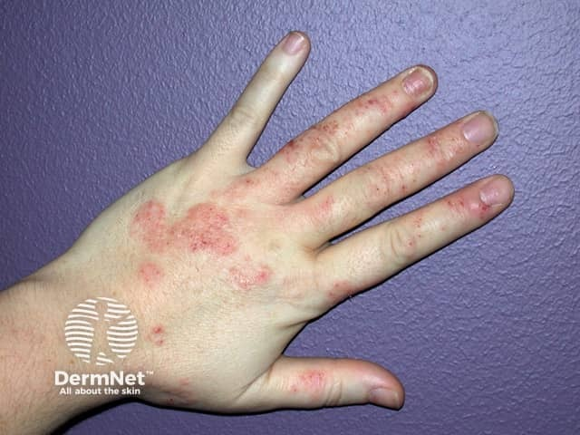
Посмотрите на фотографию тыльной поверхности кисти — перед вами типичная картина аллергического контактного дерматита. Обратите внимание на границы поражения: они размыты и выходят за пределы зоны непосредственного контакта. Кожа отёчна, видны везикулёзные элементы на фоне разлитой эритемы. Именно такой вид — «расплывшийся» воспалительный очаг с пузырьками — помогает отличить аллергический дерматит от простого раздражительного, при котором краевой рисунок резкий и точно совпадает с формой раздражителя.

На втором снимке — ладонная поверхность той же руки. Здесь хорошо виден компонент шелушения и трещины — признаки, характерные для хронической стадии, когда острое мокнутие сменяется сухостью и инфильтрацией. Сравните два кадра: тыл кисти — воспаление в активной фазе, ладонь — то, во что оно превращается при затяжном течении без устранения аллергена.
Глюкокортикостероиды (ГКС) — главное противовоспалительное средство при всех аллергодерматозах. Их действие охватывает несколько механизмов сразу: подавление воспаления, снятие зуда, угнетение пролиферации и иммуносупрессия. Местные ГКС применяют при всех формах аллергического дерматита и экземы — дозируя форму препарата по стадии: при мокнутии сначала примочки, затем пасты, затем кремы и мази. Системные ГКС — преднизолон, метипред — нужны при тяжёлых и распространённых формах: при токсикодермии назначают преднизолон по 30–40 мг/сут, при пузырчатке дозы достигают 20–25 таблеток в сутки.[5, с. 36]
Здесь необходимо назвать понятие, которое студент должен помнить каждый раз при назначении ГКС. Синдром отмены ГКС — это резкое обострение основного заболевания при быстрой отмене препарата. Причина проста: при большинстве аллергодерматозов ГКС не устраняют причину болезни, а лишь подавляют её активность — то есть оказывают морбидостатический, а не морбицидный эффект.[5, с. 36] Поэтому суточную дозу всегда снижают постепенно, и никогда — одним шагом.

На этом снимке — боковая поверхность пальца с рядом напряжённых пузырьков. Это дисгидротическая экзема, один из вариантов истинной экземы. Видна характерная картина: пузырьки плотные, располагаются в толще кожи, не склонны к немедленному вскрытию — этим они отличаются от поверхностных везикул при аллергическом дерматите. Именно при таком мокнущем процессе применяют противовоспалительные примочки: раствор амидопирина 0,25–0,5% или раствор танина 1–2%.
Диета при аллергодерматозах строится по двум принципам, которые важно не смешивать. Специфическая исключающая диета — это полное исключение из рациона конкретного аллергена, выявленного диагностически: именно его повышенная чувствительность подтверждена.[5, с. 34] Спектр пищевых аллергенов широк, и здесь возможны неожиданные находки — токсикодермия только от зелёных яблок или крапивница от определённого сорта вина.[5, с. 34] Неспецифическая исключающая диета назначается практически при всех зудящих и воспалительных дерматозах в период обострения: из рациона убирают острое, копчёное, солёное, жареное, консервированное, шоколад, цитрусовые, мёд, крепкий чай, алкоголь в любом виде.[5, с. 34]
При экземе диета дополняется количественными ограничениями: вводимую жидкость, поваренную соль и углеводы сокращают на 10–20%, поскольку они повышают воспалительный потенциал тканей, оказывают сенсибилизирующее влияние и способствуют задержке воды. Это не просто режим питания — это патогенетически обоснованная мера.
В антигистаминной терапии экземы дозы подбирают строго по возрасту. Хлоропирамин детям 1–12 месяцев назначают внутрь в дозе 6,25 мг 2–3 раза в сутки. Мебгидролин детям до 2 лет — 50–100 мг в сутки, детям 2–5 лет — 50–150 мг в сутки, детям 5–10 лет — 100–200 мг в сутки, детям старше 10 лет — 50–200 мг 1–2 раза в сутки в течение 10–20 суток. Акривастин детям старше 12 лет назначают по 8 мг 3 раза в сутки курсом 14–20 суток. При инфицировании очагов применяют 1–2% растворы анилиновых красителей.
Режим при зудящих дерматозах подчиняется одному правилу: тактика мытья определяется стадией и характером процесса. При острых аллергических воспалительных дерматозах и экземе в стадии мокнутия общее мытьё запрещается — очищение кожи ведут дезинфицирующими примочками или тампонами с растительными маслами.[5, с. 33] При «сухих» дерматозах в прогрессирующей стадии — псориазе, красном плоском лишае, атопическом дерматите — мытьё разрешено, но должно быть щадящим: без мочалки и мыла, хлопчатобумажная рукавичка или марля, гель для душа вместо мыла, мягкое полотенце промокательными движениями.[5, с. 33] При импетиго, фурункулах, гидраденитах и микроспории общее мытьё также запрещено: его заменяют спиртовыми обтираниями 70% этиловым спиртом не менее двух раз в день, от периферии к центру.[5, с. 33]
Итог раздела: пять нозологий объединяет воспаление кожи с аллергическим компонентом, но разделяет путь входа аллергена, тип иммунного ответа и хронобиология течения. ГКС работают при всех — но только как инструмент подавления активности, а не устранения причины, поэтому их отменяют постепенно. Диета и режим — не вспомогательные меры: при аллергодерматозах они иногда дают ремиссию без всякой фармакологии.
Источники
- 4_лекция_дерматит,_токсикодермия,_экзема
- 8. Лекция нейродерматозы
- Конспект лекций дерматология
- 2. лекция Пиодермиты
- Иванов — Кожные и венерические болезни